Preprocessing, tractography, and microstructure. Each command has two buttons: the script that ran, and its outputs (decisions, results, figures).
57 subjects, run in parallel on the Temple cluster inside tmux. Scripts are verbatim from the project ReadMe (Steps 1–30); audit blocks omitted.
#!/bin/bash # ============================================================ # DICOM → NIfTI conversion for IMPACT (DTI pipeline) # With subject-prefixed filenames + logging # ============================================================ base_dir="/data/projects/STUDIES/IMPACT/fMRI/dicoms" out_base="/data/projects/STUDIES/IMPACT/DTI/NIFTI" dcm2niix_bin="/usr/bin/dcm2niix" # confirmed path on cluster # Required scan patterns (pattern:output_dir:label) scan_types=( "anat_T1w_acq_mpgSag:struct:struct" "cmrr_mb3hydi_ipat2_64ch:dti:dwi" "cmrr_fieldmapse_ap:dti:fmapAP" "cmrr_fieldmapse_pa:dti:fmapPA" ) # Log file (always overwrite dcm2niix.log) logfile="dcm2niix.log" : > "$logfile" # Simple logger: prints to screen AND appends to logfile log() { echo "$*" | tee -a "$logfile" ; } log "=== Starting DICOM → NIfTI conversion ===" for subj in "$base_dir"/*; do [ -d "$subj" ] || continue subj_id=$(basename "$subj") log "--- Checking subject: $subj_id ---" # Check completeness complete=true for scan in "${scan_types[@]}"; do pattern="${scan%%:*}" if ! find "$subj" -maxdepth 1 -type d -regex ".*/[0-9]+-$pattern.*" | grep -q .; then log " ❌ Missing required scan: $pattern" complete=false fi done if [ "$complete" = false ]; then log " ⚠️ Skipping $subj_id (not DTI-clear)" continue fi # Output directories subj_out="$out_base/$subj_id" mkdir -p "$subj_out/struct" "$subj_out/dti" # Convert each scan type for scan in "${scan_types[@]}"; do IFS=":" read -r pattern target label <<< "$scan" scan_dir=$(find "$subj" -maxdepth 1 -type d -regex ".*/[0-9]+-$pattern.*" | head -n 1) log " ✅ Converting $pattern → $target/" { echo "----- [$subj_id $label] dcm2niix start" $dcm2niix_bin -o "$subj_out/$target" -f "${subj_id}_${label}" "$scan_dir" echo "----- [$subj_id $label] dcm2niix end" echo } >>"$logfile" 2>&1 done done log "=== Conversion finished. Output saved to: $out_base ==="
Convert the scanner's raw DICOM into NIfTI. Only subjects with all four required scans (T1, diffusion, and the two opposed fieldmaps) were converted.
57 usable subjects. 5 dropped here for missing scans (s1253, s1476, s578, s820, s999-pilot).
#!/bin/bash # ============================================================ # Parallelized ANTs Skull Stripping for IMPACT (DTI) # ============================================================ # Paths ANTs_bin="/data/tools/ants/bin/antsBrainExtraction.sh" TEMPLATE="/data/projects/STUDIES/IMPACT/DTI/ANTsTemplate/NKI/T_template.nii.gz" TEMPLATE_MASK="/data/projects/STUDIES/IMPACT/DTI/ANTsTemplate/NKI/T_template_BrainCerebellumMask.nii.gz" in_base="/data/projects/STUDIES/IMPACT/DTI/NIFTI" out_base="/data/projects/STUDIES/IMPACT/DTI/derivatives/ANTs" # Collect all subject IDs from NIFTI directory subjects=($(ls -1 "$in_base")) # Function to process one subject process_subject () { subj_id="$1" echo "=== Processing $subj_id ===" nii_file="$in_base/$subj_id/struct/${subj_id}_struct.nii" out_dir="$out_base/$subj_id" mkdir -p "$out_dir" "$ANTs_bin" -d 3 -a "$nii_file" -e "$TEMPLATE" -m "$TEMPLATE_MASK" -o "$out_dir/" # Rename outputs with subject prefix mv "$out_dir/BrainExtractionBrain.nii.gz" "$out_dir/${subj_id}_BrainExtractionBrain.nii.gz" mv "$out_dir/BrainExtractionMask.nii.gz" "$out_dir/${subj_id}_BrainExtractionMask.nii.gz" mv "$out_dir/BrainExtractionPrior0GenericAffine.mat" "$out_dir/${subj_id}_BrainExtractionPrior0GenericAffine.mat" echo "=== Finished $subj_id ===" } # ============================== # Run jobs in parallel (max 30) # ============================== max_jobs=30 job_count=0 for subj in "${subjects[@]}"; do process_subject "$subj" & # run in background ((job_count++)) if (( job_count >= max_jobs )); then wait -n # wait for one job to finish ((job_count--)) fi done wait # wait for all jobs to finish echo -e "\n=== Skull stripping finished. Results saved to: $out_base ==="
Skull-strip the T1 by warping a brain-only template onto each subject and copying its outline over. We used the NKI adult template (a good average adult brain). Every stripped brain was eyeballed in FSLeyes.
#!/bin/bash # Step 3: B0 Concatenation (parallel + verbose) nifti_base="/data/projects/STUDIES/IMPACT/DTI/NIFTI" deriv_base="/data/projects/STUDIES/IMPACT/DTI/derivatives/b0_concat" mkdir -p "$deriv_base" # Function to process a single subject process_subj() { subj=$1 subj_dir="$nifti_base/$subj/dti" out_dir="$deriv_base/$subj" mkdir -p "$out_dir" echo ">>> [$subj] Starting B0 extraction and concatenation" # Check inputs exist if [ ! -f "$subj_dir/${subj}_fmapAP.nii" ] || [ ! -f "$subj_dir/${subj}_fmapPA.nii" ]; then echo "!!! [$subj] Missing AP or PA fieldmap. Skipping." return fi # Extract b0 from AP echo ">>> [$subj] Extracting AP b0" fslroi "$subj_dir/${subj}_fmapAP.nii" \ "$out_dir/${subj}_a2p_b0.nii.gz" 0 1 # Extract b0 from PA echo ">>> [$subj] Extracting PA b0" fslroi "$subj_dir/${subj}_fmapPA.nii" \ "$out_dir/${subj}_p2a_b0.nii.gz" 0 1 # Merge AP + PA echo ">>> [$subj] Merging AP+PA b0s" fslmerge -t "$out_dir/${subj}_merged_b0s.nii.gz" \ "$out_dir/${subj}_a2p_b0.nii.gz" \ "$out_dir/${subj}_p2a_b0.nii.gz" echo ">>> [$subj] Done!" } export -f process_subj export nifti_base deriv_base # === Run in parallel === # Safe to use 30 jobs: B0 extraction/merge is light compared to ANT for which 30 parellel was no problem #30 subjects in parallel. subjects=$(basename -a "$nifti_base"/*) echo "Found $(echo $subjects | wc -w) subjects in $nifti_base" echo "Running with up to 30 in parallel..." if command -v parallel > /dev/null; then echo "$subjects" | tr ' ' '\n' | parallel -j 30 process_subj {} else max_jobs=30 for subj in $subjects; do process_subj "$subj" & while [ "$(jobs -r | wc -l)" -ge "$max_jobs" ]; do sleep 1 done done wait fi echo "=== All B0 concatenation jobs finished ==="
Build the fieldmap pair. Diffusion scans warp near air/tissue boundaries (susceptibility distortion); to measure it the scanner takes two b0 images with opposite phase-encoding (AP and PA). Here we grab the first b0 of each and stack them.
#!/bin/bash # Step 4: TOPUP (susceptibility distortion correction) nifti_base="/data/projects/STUDIES/IMPACT/DTI/NIFTI" b0_base="/data/projects/STUDIES/IMPACT/DTI/derivatives/b0_concat" deriv_base="/data/projects/STUDIES/IMPACT/DTI/derivatives/TOPUP" datain_file="/data/projects/STUDIES/IMPACT/DTI/config/acqp.txt" config_file="/usr/local/fsl/etc/flirtsch/b02b0_1.cnf" process_subj() { subj=$1 b0_file="$b0_base/$subj/${subj}_merged_b0s.nii.gz" output_dir="$deriv_base/$subj/topup_output" mkdir -p "$output_dir" output_prefix="$output_dir/${subj}_topup" # Skip if outputs already exist if [[ -f "${output_prefix}_corrected_b0.nii.gz" && -f "${output_prefix}_fieldmap.nii.gz" ]]; then echo "=== [$subj] Already has TOPUP outputs, skipping" return fi if [ ! -f "$b0_file" ]; then echo "!!! [$subj] Missing merged b0 input, skipping" return fi echo ">>> [$subj] Running TOPUP" topup --imain="$b0_file" --datain="$datain_file" \ --config="$config_file" \ --out="$output_prefix" \ --iout="${output_prefix}_corrected_b0" \ --fout="${output_prefix}_fieldmap" \ --verbose echo ">>> [$subj] Done" } export -f process_subj export nifti_base b0_base deriv_base datain_file config_file subjects=$(basename -a "$nifti_base"/*) echo "Found $(echo $subjects | wc -w) subjects in $nifti_base" # Run in parallel: up to 18 jobs at once if command -v parallel > /dev/null; then echo "$subjects" | tr ' ' '\n' | parallel -j 18 process_subj {} else max_jobs=18 for subj in $subjects; do process_subj "$subj" & while [ "$(jobs -r | wc -l)" -ge "$max_jobs" ]; do sleep 1 done done wait fi echo "=== All TOPUP jobs finished ==="
Estimate the distortion field from the AP/PA pair, plus a corrected b0. The field is fed into eddy so the diffusion volumes get un-distorted in the same motion-correction pass.
#!/bin/bash # Step 5: Mean B0 Image (collapse across time, with logging) deriv_base="/data/projects/STUDIES/IMPACT/DTI/derivatives/TOPUP" logfile="mean_b0.log" # Initialize/clear log : > "$logfile" # Logger function log() { printf '%s %s\n' "$(date '+%F %T')" "$*" | tee -a "$logfile" ; } # Source FSL environment once source /usr/local/fsl/etc/fslconf/fsl.sh export FSLOUTPUTTYPE=NIFTI_GZ process_subj() { subj=$1 input_file="${deriv_base}/${subj}/topup_output/${subj}_topup_corrected_b0.nii.gz" output_file="${deriv_base}/${subj}/topup_output/${subj}_topup_Tmean.nii.gz" if [[ -f "$input_file" ]]; then log ">>> [$subj] Averaging B0 across time" { echo "----- [$subj] fslmaths start" echo "cmd: fslmaths \"$input_file\" -Tmean \"$output_file\"" fslmaths "$input_file" -Tmean "$output_file" echo "----- [$subj] fslmaths end" echo } >>"$logfile" 2>&1 log ">>> [$subj] Done" else log "!!! [$subj] Missing input: $input_file" fi } # Max parallel jobs max_jobs=60 job_count=0 for subj in $(ls -1 "$deriv_base"); do process_subj "$subj" & ((job_count++)) if (( job_count >= max_jobs )); then wait -n ((job_count--)) fi done wait log "=== Mean B0 collapse finished for all subjects ==="
Average the corrected b0 volumes into one clean, low-noise reference, used as the target for brain-masking and motion correction.
# Step 6: Brain extraction on mean b0 (parallelized, Bash-only, safe logging) deriv_base="/data/projects/STUDIES/IMPACT/DTI/derivatives/TOPUP" # One shared log file (always overwrite bet.log) logfile="bet.log" : > "$logfile" # create/clear # Simple logger: prints to screen AND appends to logfile log() { echo "$*" | tee -a "$logfile" ; } # Source FSL environment once source /usr/local/fsl/etc/fslconf/fsl.sh export FSLOUTPUTTYPE=NIFTI_GZ process_subj() { local subj="$1" local input="${deriv_base}/${subj}/topup_output/${subj}_topup_Tmean.nii.gz" local output="${deriv_base}/${subj}/topup_output/${subj}_topup_Tmean_brain.nii.gz" if [[ -f "$input" ]]; then log ">>> [$subj] Running BET on mean b0" { echo "----- [$subj] BET start" echo "cmd: bet \"$input\" \"$output\" -m -f 0.2 -g 0.1 -R -v" bet "$input" "$output" -m -f 0.2 -g 0.1 -R -v echo "----- [$subj] BET end" echo } >>"$logfile" 2>&1 log ">>> [$subj] Brain mask created" else log "!!! [$subj] Missing input: $input" fi } subjects=$(ls -1 "$deriv_base") max_jobs=60 job_count=0 for subj in $subjects; do process_subj "$subj" & ((job_count++)) if (( job_count >= max_jobs )); then wait -n # wait for one to finish, then continue launching ((job_count--)) fi done wait # ensure all background jobs are finished log "=== Brain extraction finished for all subjects ==="
Make a brain mask from the mean b0. Later steps only compute inside the mask, which saves time and avoids garbage from outside the brain.
#!/bin/bash # Step 7: Gibbs ringing removal + b=250 cleanup (sequential version) denoise_dir="/data/projects/STUDIES/IMPACT/DTI/derivatives/denoise" nifti_base="/data/projects/STUDIES/IMPACT/DTI/NIFTI" topup_base="/data/projects/STUDIES/IMPACT/DTI/derivatives/TOPUP" # Add MRtrix to PATH (adjust if installed elsewhere) for subj in $(ls -1 "$nifti_base"); do echo ">>> [$subj] Starting denoise + mrdegibbs + b=250 cleanup" subj_dir="$nifti_base/$subj/dti" # Auto-detect .nii or .nii.gz for DWI dwi_file=$(ls "$subj_dir/${subj}_dwi.nii"* 2>/dev/null | head -n1) bval_file="$subj_dir/${subj}_dwi.bval" bvec_file="$subj_dir/${subj}_dwi.bvec" mask_file="$topup_base/$subj/topup_output/${subj}_topup_Tmean_brain_mask.nii.gz" # Skip subject if files are missing if [[ ! -f "$dwi_file" || ! -f "$bval_file" || ! -f "$bvec_file" || ! -f "$mask_file" ]]; then echo "!!! [$subj] Missing input files, skipping" continue fi out_subj="$denoise_dir/$subj" mkdir -p "$out_subj/dwidenoise" "$out_subj/mrdegibbs" "$out_subj/mrdegibbs_no_b250" # Step 1: Denoise dwidenoise \ -mask "$mask_file" \ -noise "$out_subj/dwidenoise/${subj}_noise_map.nii.gz" \ "$dwi_file" \ "$out_subj/dwidenoise/${subj}_denoised.nii.gz" -force # Step 2: Gibbs ringing removal mrdegibbs \ "$out_subj/dwidenoise/${subj}_denoised.nii.gz" \ "$out_subj/mrdegibbs/${subj}_denoised_degibbs.nii.gz" -force # Step 3: Remove b=250 shell from data (keep 0,1000,2000,3250,5000) dwiextract \ "$out_subj/mrdegibbs/${subj}_denoised_degibbs.nii.gz" \ -fslgrad "$bvec_file" "$bval_file" \ -shells 0,1000,2000,3250,5000 \ "$out_subj/mrdegibbs_no_b250/${subj}_dwi_no_b250.nii.gz" \ -export_grad_fsl \ "$out_subj/mrdegibbs_no_b250/${subj}_dwi_no_b250.bvec" \ "$out_subj/mrdegibbs_no_b250/${subj}_dwi_no_b250.bval" \ -force echo ">>> [$subj] Done" done echo "=== All subjects finished (sequential run) ==="
Three cleanups on the raw diffusion data: remove thermal noise (MP-PCA), remove Gibbs ringing, and drop the unstable b=250 shell (Olson-lab convention).
Shells kept: b = 0, 1000, 2000, 3250, 5000.
#!/bin/bash # Base directories nifti_base="/data/projects/STUDIES/IMPACT/DTI/NIFTI" denoise_dir="/data/projects/STUDIES/IMPACT/DTI/derivatives/denoise" topup_base="/data/projects/STUDIES/IMPACT/DTI/derivatives/TOPUP" eddy_base="/data/projects/STUDIES/IMPACT/DTI/derivatives/EDDY" acq_params_file="/data/projects/STUDIES/IMPACT/DTI/config/acqp.txt" index_file="/data/projects/STUDIES/IMPACT/DTI/config/index_no_b250.txt" # Function to run EDDY for one subject process_subj() { subj=$1 echo ">>> [$subj] Running EDDY" mrdegibbs_dir="$denoise_dir/$subj/mrdegibbs_no_b250" topup_dir="$topup_base/$subj/topup_output" out_dir="$eddy_base/$subj" mkdir -p "$out_dir" eddy \ --imain="$mrdegibbs_dir/${subj}_dwi_no_b250.nii.gz" \ --mask="$topup_dir/${subj}_topup_Tmean_brain_mask.nii.gz" \ --acqp="$acq_params_file" \ --index="$index_file" \ --bvecs="$mrdegibbs_dir/${subj}_dwi_no_b250.bvec" \ --bvals="$mrdegibbs_dir/${subj}_dwi_no_b250.bval" \ --topup="$topup_dir/${subj}_topup" \ --out="$out_dir/${subj}_eddy" \ --cnr_maps \ --repol \ -v echo ">>> [$subj] Done" } export -f process_subj export denoise_dir topup_base eddy_base acq_params_file index_file subjects=$(ls -1 "$nifti_base") # Run up to 8 jobs in parallel if command -v parallel > /dev/null; then echo "$subjects" | parallel -j 8 process_subj {} else max_jobs=8 job_count=0 for subj in $subjects; do process_subj "$subj" & ((job_count++)) if (( job_count >= max_jobs )); then wait -n ((job_count--)) fi done wait fi echo "=== All EDDY jobs finished ==="
The big correction: head motion, eddy-current distortion, and the susceptibility field (from topup), all at once, with outlier-slice replacement. A corrupted slice (4+ SD below expected) is rebuilt from a model prediction.
#!/bin/bash # ============================================================ # IMPACT DTI QC Pipeline (QUAD -> quad_list.txt -> SQUAD -> summary) # Notes: # - SQUAD expects a text file listing QUAD subject dirs containing qc.json - this script creates that file. # - Do NOT pre-create $squad_base (eddy_squad will create it) # - "Outlier slice" = slice whose mean intensity is ≥ 4 SD below expected # ============================================================ set -u -o pipefail export OMP_NUM_THREADS=1 export MKL_NUM_THREADS=1 OPENBLAS_NUM_THREADS=1 NUMEXPR_NUM_THREADS=1 # --- Paths --- nifti_base="/data/projects/STUDIES/IMPACT/DTI/NIFTI" denoise_base="/data/projects/STUDIES/IMPACT/DTI/derivatives/denoise" eddy_base="/data/projects/STUDIES/IMPACT/DTI/derivatives/EDDY" topup_base="/data/projects/STUDIES/IMPACT/DTI/derivatives/TOPUP" quad_base="/data/projects/STUDIES/IMPACT/DTI/derivatives/QUAD" squad_base="/data/projects/STUDIES/IMPACT/DTI/derivatives/SQUAD" acq_params="/data/projects/STUDIES/IMPACT/DTI/config/acqp.txt" index_file="/data/projects/STUDIES/IMPACT/DTI/config/index_no_b250.txt" out_txt="/data/projects/STUDIES/IMPACT/DTI/derivatives/qc_summary.txt" quad_list="$quad_base/quad_list.txt" : > "$quad_list" # -------------------- Step 1: QUAD ------------------------- echo ">>> Step 1: running QUAD in parallel (max 60)..." ls -1 "$nifti_base" | xargs -n 1 -P 60 -I{} bash -c ' subj="{}" mask_file="'"$topup_base"'/$subj/topup_output/${subj}_topup_Tmean_brain_mask.nii.gz" bval_file="'"$denoise_base"'/$subj/mrdegibbs_no_b250/${subj}_dwi_no_b250.bval" bvec_file="'"$denoise_base"'/$subj/mrdegibbs_no_b250/${subj}_dwi_no_b250.bvec" eddy_prefix="'"$eddy_base"'/$subj/${subj}_eddy" out_dir="'"$quad_base"'/$subj" if [[ -f "$mask_file" && -f "$bval_file" && -f "$bvec_file" && -f "${eddy_prefix}.nii.gz" ]]; then echo ">>> QUAD: $subj" rm -rf "$out_dir" eddy_quad "$eddy_prefix" \ -idx "'"$index_file"'" \ -par "'"$acq_params"'" \ -m "$mask_file" \ -b "$bval_file" \ -g "$bvec_file" \ -o "$out_dir" else echo "!! Skipping $subj (missing inputs)" fi ' # -------------------- Step 2: SQUAD ------------------------ echo ">>> Step 2: rebuilding quad_list (only QUADs with qc.json) and running SQUAD..." find "$quad_base" -mindepth 1 -maxdepth 1 -type d \ -exec test -f "{}/qc.json" \; -print | sort > "$quad_list" nsubj=$(wc -l < "$quad_list" | tr -d " ") echo "Found $nsubj subjects for SQUAD." if [[ "$nsubj" -eq 0 ]]; then echo "!! quad_list.txt is empty; skipping SQUAD" else # Optional: ensure a clean SQUAD run # rm -rf "$squad_base" echo "Running eddy_squad..." eddy_squad "$quad_list" -o "$squad_base" || echo "!! eddy_squad failed; continuing to summary with available data" fi # -------------------- Step 3: Summary ---------------------- echo ">>> Step 3: collating per-subject (QUAD) + group metrics (SQUAD)..." { echo "QC Summary — IMPACT DTI" echo "Exclusion threshold: >2 mm average absolute motion" echo echo "Per-subject results:" } > "$out_txt" per_subj_tmp=$(mktemp) excl_tmp=$(mktemp) while IFS= read -r subj_dir; do subj=$(basename "$subj_dir") qc_file="$subj_dir/qc.json" [[ -f "$qc_file" ]] || continue abs_motion=$(python3 - <<PY "$qc_file" import json,sys d=json.load(open(sys.argv[1])) print(d.get('qc_mot_abs') or d.get('avg_abs_motion') or "NA") PY ) rel_motion=$(python3 - <<PY "$qc_file" import json,sys d=json.load(open(sys.argv[1])) print(d.get('qc_mot_rel') or "NA") PY ) out_prop=$(python3 - <<PY "$qc_file" import json,sys d=json.load(open(sys.argv[1])) v=d.get('qc_outliers_tot') or d.get('outlier_prop') print("" if v is None else v) PY ) if [[ -n "$out_prop" ]]; then # qc_outliers_tot is already expressed as percent of slices out_pct=$(awk -v v="$out_prop" 'BEGIN{printf("%.2f",v)}') else out_pct="NA" fi printf "%s\tavg_abs_motion=%smm\trel_motion=%smm\toutlier_slices=%s%%\n" \ "$subj" "$abs_motion" "$rel_motion" "$out_pct" >> "$per_subj_tmp" awk -v m="${abs_motion:-0}" -v s="$subj" 'BEGIN{ if (m+0>2.0) print s }' >> "$excl_tmp" done < "$quad_list" sort "$per_subj_tmp" >> "$out_txt" echo >> "$out_txt" echo "Exclusions (>2 mm):" >> "$out_txt" if [[ -s "$excl_tmp" ]]; then sort "$excl_tmp" >> "$out_txt" else echo "None" >> "$out_txt" fi # --- group stats from SQUAD group_db.json --- group_db="$squad_base/group_db.json" if [[ -f "$group_db" ]]; then echo >> "$out_txt" echo "Group-level metrics (from SQUAD group_db.json):" >> "$out_txt" python3 - "$group_db" >> "$out_txt" <<'PY' import json, sys, numpy as np path = sys.argv[1] with open(path) as f: d = json.load(f) motions = np.array(d.get("qc_motion", []), dtype=float) outliers = np.array(d.get("qc_outliers", []), dtype=float) if motions.size > 0: print(f"Mean (SD) average absolute motion across participants = {motions.mean():.2f} ({motions.std(ddof=1):.2f}) mm") else: print("Mean (SD) average absolute motion across participants = NA (NA) mm") if outliers.size > 0: print(f"Mean (SD) frequency of outlier slices = {outliers.mean():.2f}% ({outliers.std(ddof=1):.2f}%)") else: print("Mean (SD) frequency of outlier slices = NA (NA)%") PY else echo >> "$out_txt" echo "!! No group_db.json found — group metrics unavailable" >> "$out_txt" fi rm -f "$per_subj_tmp" "$excl_tmp" echo "=== Done. Summary written to: $out_txt ===" tail -n 20 "$out_txt"
Per-subject (QUAD) and group (SQUAD) automated QC, plus a manual FSLeyes scroll-through. The per-subject absolute-motion number becomes a covariate.
Motion was low across the board. Group mean absolute motion 0.27 mm. The rule was to exclude anyone over 2 mm; nobody hit it.
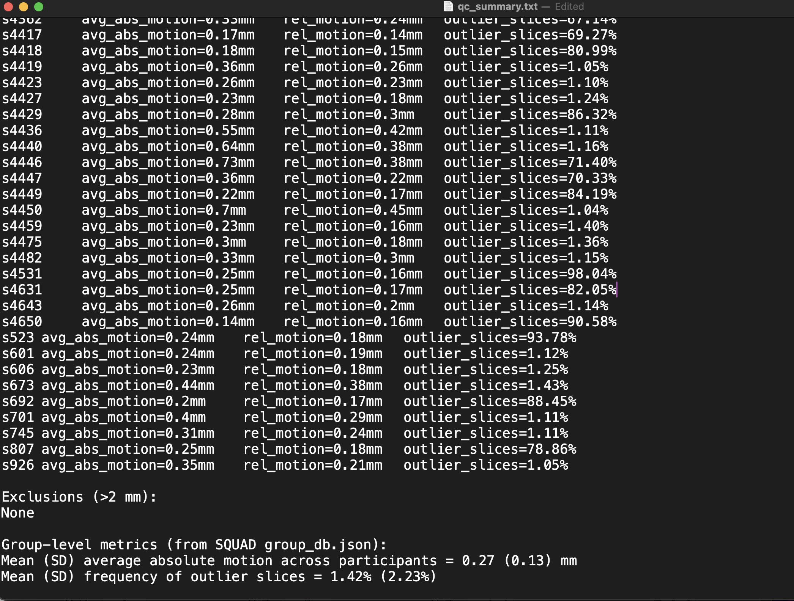
#!/bin/bash ############################################################################### # 🧠 IMPACT DTI — Parallel DWIEXTRACT (live + logged output, stable + safe) ############################################################################### # --- consistent logging (no SSH close) --- log_file="$HOME/dwiextract.log" : > "$log_file" # clear previous run echo "=== Starting DWIEXTRACT ===" | tee -a "$log_file" # --- base directories --- base_dir="/data/projects/STUDIES/IMPACT/DTI/derivatives/preproc" mrtrix3_1000_base="/data/projects/STUDIES/IMPACT/DTI/derivatives/mrtrix3_1000" mrtrix3_2000_base="/data/projects/STUDIES/IMPACT/DTI/derivatives/mrtrix3_2000" mkdir -p "$mrtrix3_1000_base" "$mrtrix3_2000_base" # --- function: process one subject --- process_subj() { subj="$1" subj_dir="$base_dir/$subj/eddy_dwi" echo ">>> [$subj] START" | tee -a "$log_file" mkdir -p "$mrtrix3_1000_base/$subj" "$mrtrix3_2000_base/$subj" echo ">>> [$subj] Running dwiextract (b=0,1000)" | tee -a "$log_file" dwiextract \ -fslgrad "$subj_dir/bvecs" "$subj_dir/bvals" \ -shells 0,1000 \ "$subj_dir/data.nii.gz" \ "$mrtrix3_1000_base/$subj/data_1000.nii.gz" \ -export_grad_fsl \ "$mrtrix3_1000_base/$subj/bvecs_1000" \ "$mrtrix3_1000_base/$subj/bvals_1000" \ -force 2>&1 | tee -a "$log_file" echo ">>> [$subj] Running dwiextract (b=0,1000,2000)" | tee -a "$log_file" dwiextract \ -fslgrad "$subj_dir/bvecs" "$subj_dir/bvals" \ -shells 0,1000,2000 \ "$subj_dir/data.nii.gz" \ "$mrtrix3_2000_base/$subj/data_1000_2000.nii.gz" \ -export_grad_fsl \ "$mrtrix3_2000_base/$subj/bvecs_1000_2000" \ "$mrtrix3_2000_base/$subj/bvals_1000_2000" \ -force 2>&1 | tee -a "$log_file" echo ">>> [$subj] DONE" | tee -a "$log_file" } export -f process_subj export base_dir mrtrix3_1000_base mrtrix3_2000_base log_file # --- find and run subjects in parallel (no hang, no wait) --- subjects=$(find "$base_dir" -mindepth 1 -maxdepth 1 -type d -exec basename {} \;) count=$(echo "$subjects" | wc -l) echo "Found $count subjects. Running up to 60 in parallel..." | tee -a "$log_file" echo "$subjects" | xargs -n 1 -P 60 -I {} bash -c 'process_subj "$@"' _ {} | tee -a "$log_file" echo "=== All DWIEXTRACT jobs finished successfully ===" | tee -a "$log_file"
Make reduced datasets by shell (b=0,1000 and b=0,1000,2000). The tensor model, next, only wants the low shells.
#!/bin/bash # ============================================================ # 🧠 IMPACT DTI — Step 11: Tensor Fitting (DTIFIT) # ============================================================ source /usr/local/fsl/etc/fslconf/fsl.sh export FSLOUTPUTTYPE=NIFTI_GZ # --- Safe logging (no exec redirection, no SSH close) --- log_file="$HOME/dtifit.log" : > "$log_file" echo "=== Starting DTIFIT ===" | tee -a "$log_file" # --- Base directories --- mrtrix3_1000_base="/data/projects/STUDIES/IMPACT/DTI/derivatives/mrtrix3_1000" topup_base="/data/projects/STUDIES/IMPACT/DTI/derivatives/TOPUP" dtifit_base="/data/projects/STUDIES/IMPACT/DTI/derivatives/DTIFIT_OUTPUT" mkdir -p "$dtifit_base" # --- Function --- process_subj() { subj="$1" subj_mrtrix="$mrtrix3_1000_base/$subj" subj_topup="$topup_base/$subj/topup_output" subj_out="$dtifit_base/$subj" mkdir -p "$subj_out" data="$subj_mrtrix/data_1000.nii.gz" bvec="$subj_mrtrix/bvecs_1000" bval="$subj_mrtrix/bvals_1000" mask="$subj_topup/${subj}_topup_Tmean_brain_mask.nii.gz" if [[ ! -f "$data" || ! -f "$bvec" || ! -f "$bval" || ! -f "$mask" ]]; then echo "!!! [$subj] Missing input(s). Skipping." | tee -a "$log_file" return fi echo ">>> [$subj] Running DTIFIT" | tee -a "$log_file" { dtifit -k "$data" -o "$subj_out/DTI" -m "$mask" -r "$bvec" -b "$bval" if [[ -f "$subj_out/DTI_L2.nii.gz" && -f "$subj_out/DTI_L3.nii.gz" ]]; then echo ">>> [$subj] Calculating RD = (L2+L3)/2" fslmaths "$subj_out/DTI_L2.nii.gz" -add "$subj_out/DTI_L3.nii.gz" \ -div 2 "$subj_out/DTI_RD.nii.gz" else echo "!!! [$subj] Missing L2/L3 for RD computation" fi echo ">>> [$subj] Done" } 2>&1 | tee -a "$log_file" } export -f process_subj export mrtrix3_1000_base topup_base dtifit_base log_file # --- Parallel run --- subjects=$(ls -1 "$mrtrix3_1000_base") count=$(echo "$subjects" | wc -l) echo "Found $count subjects. Running up to 60 in parallel..." | tee -a "$log_file" echo "$subjects" | xargs -n 1 -P 60 -I {} bash -c 'process_subj "$@"' _ {} | tee -a "$log_file" echo "=== All $count DTIFIT jobs finished successfully ===" | tee -a "$log_file"
Fit the diffusion tensor on the low shells and derive FA, MD, and RD. FA is one of the four microstructure metrics carried to the analyses.
#!/bin/bash # ============================================================ # 🧠 IMPACT DTI — Step 12: FLIRT + CONVERT (Spatial Alignment) # ============================================================ source /usr/local/fsl/etc/fslconf/fsl.sh export FSLOUTPUTTYPE=NIFTI_GZ # --- Logging --- log_file="$HOME/flirtconvert.log" : > "$log_file" echo "=== Starting FLIRT + CONVERT ===" | tee -a "$log_file" # --- Directories --- ants_base="/data/projects/STUDIES/IMPACT/DTI/derivatives/ANTs" topup_base="/data/projects/STUDIES/IMPACT/DTI/derivatives/TOPUP" transform_base="/data/projects/STUDIES/IMPACT/DTI/derivatives/TRANSFORMS" template_ref="/usr/local/fsl/data/standard/MNI152_T1_2mm_brain.nii.gz" mkdir -p "$transform_base" # --- Function: Run FLIRT + CONVERT for one subject --- process_subj() { subj="$1" subj_ants="$ants_base/$subj" subj_topup="$topup_base/$subj/topup_output" subj_out="$transform_base/$subj" mkdir -p "$subj_out" t1_brain="$subj_ants/${subj}_BrainExtractionBrain.nii.gz" b0_brain="$subj_topup/${subj}_topup_Tmean_brain.nii.gz" # Skip if missing input if [[ ! -f "$t1_brain" || ! -f "$b0_brain" ]]; then echo "!!! [$subj] Missing input(s), skipping" | tee -a "$log_file" return fi echo ">>> [$subj] Running FLIRT + CONVERT" | tee -a "$log_file" flirt -in "$b0_brain" -ref "$t1_brain" \ -omat "$subj_out/diff2str_${subj}.mat" \ -searchrx -90 90 -searchry -90 90 -searchrz -90 90 \ -dof 6 -cost corratio convert_xfm -omat "$subj_out/str2diff_${subj}.mat" \ -inverse "$subj_out/diff2str_${subj}.mat" flirt -in "$t1_brain" -ref "$template_ref" \ -omat "$subj_out/str2standard_${subj}.mat" \ -searchrx -90 90 -searchry -90 90 -searchrz -90 90 \ -dof 12 -cost corratio convert_xfm -omat "$subj_out/standard2str_${subj}.mat" \ -inverse "$subj_out/str2standard_${subj}.mat" convert_xfm -omat "$subj_out/diff2standard_${subj}.mat" \ -concat "$subj_out/str2standard_${subj}.mat" "$subj_out/diff2str_${subj}.mat" convert_xfm -omat "$subj_out/standard2diff_${subj}.mat" \ -inverse "$subj_out/diff2standard_${subj}.mat" echo ">>> [$subj] Done" | tee -a "$log_file" } export -f process_subj export ants_base topup_base transform_base template_ref log_file # --- Parallel Run --- subjects=$(ls -1 "$ants_base") echo "Found $(echo "$subjects" | wc -l) subjects. Running up to 60 in parallel..." | tee -a "$log_file" echo "$subjects" | xargs -n 1 -P 60 -I {} bash -c 'process_subj "$@"' _ {} echo "=== All FLIRT + CONVERT jobs finished ===" | tee -a "$log_file"
Compute the linear alignments between diffusion, T1, and MNI space, and invert the set. The one reused later is str2diff (T1 to diffusion), to bring the ROIs into the DWI grid.
#!/bin/bash # ============================================================ # 🧠 IMPACT DTI — Step 13: Intracranial Volume (ICV) Estimation # ============================================================ source /usr/local/fsl/etc/fslconf/fsl.sh export FSLOUTPUTTYPE=NIFTI_GZ ANTs_bin="/data/tools/ANTs/bin" ants_base="/data/projects/STUDIES/IMPACT/DTI/derivatives/ANTs" icv_base="/data/projects/STUDIES/IMPACT/DTI/derivatives/ICV" csv_file="$icv_base/icv_results.csv" log_file="$HOME/icv.log" mkdir -p "$icv_base" : > "$log_file" echo "participant_id,brain_file_name,ICV_mm3" > "$csv_file" # --- Function to process one subject --- process_subj() { subj="$1" subj_dir="$ants_base/$subj" brain_file="$subj_dir/${subj}_BrainExtractionBrain.nii.gz" mask_file="$subj_dir/${subj}_BrainExtractionMask.nii.gz" out_dir="$icv_base/$subj" mkdir -p "$out_dir" echo ">>> [$subj] Running Atropos segmentation..." | tee -a "$log_file" # Segmentation (probabilistic) "$ANTs_bin/Atropos" -d 3 \ -a "$brain_file" \ -x "$mask_file" \ -i KMeans[3] \ -c [5,0.001] \ -m [0.3,1x1x1] \ -o ["$out_dir/${subj}_seg_labelled.nii.gz","$out_dir/${subj}_seg_prob%02d.nii.gz"] # Ensure segmentation maps exist if [[ ! -f "$out_dir/${subj}_seg_prob01.nii.gz" ]]; then echo "!!! [$subj] Segmentation failed — missing prob maps." | tee -a "$log_file" return fi # Compute ICV csf=$(fslstats "$out_dir/${subj}_seg_prob01.nii.gz" -V | awk '{print $2}') gm=$(fslstats "$out_dir/${subj}_seg_prob02.nii.gz" -V | awk '{print $2}') wm=$(fslstats "$out_dir/${subj}_seg_prob03.nii.gz" -V | awk '{print $2}') icv=$(echo "$csf + $gm + $wm" | bc) echo "$subj,$(basename "$brain_file"),$icv" >> "$csv_file" echo ">>> [$subj] Done (ICV = ${icv} mm³)" | tee -a "$log_file" } export -f process_subj export ANTs_bin ants_base icv_base csv_file log_file # --- Parallel run --- subjects=$(ls -1 "$ants_base") max_jobs=20 # adjust based on system load echo "Found $(echo "$subjects" | wc -l) subjects. Running up to $max_jobs in parallel..." | tee -a "$log_file" echo "$subjects" | xargs -n 1 -P "$max_jobs" -I {} bash -c 'process_subj "$@"' _ {} echo "=== All ICV jobs finished. Results in $csv_file ===" | tee -a "$log_file"
Estimate intracranial volume: segment the T1 into CSF/GM/WM and sum. ICV is a covariate so a finding isn't just about head size.
We briefly organized the data into BIDS layout to try pyAFQ's automated tractography. No imaging math happened here (copying and renaming only). We ultimately went with MRtrix for tractography and kept pyAFQ only for its tract cleaning (Step 25).
#!/bin/bash # ============================================================ # Step 15: Convert DWI to MRtrix format (mrconvert) # ============================================================ # Converts eddy-corrected DWI + gradients + brain mask from # NIfTI to MRtrix .mif format for CSD pipeline # Input: preproc/eddy_dwi/ (data.nii.gz, bvecs, bvals, mask) # Output: CSD/<subj>/dwi.mif, mask.mif # ============================================================ export PATH=/data/tools/mrtrix3/bin:$PATH eddydwi_base="/data/projects/STUDIES/IMPACT/DTI/derivatives/preproc" csd_base="/data/projects/STUDIES/IMPACT/DTI/derivatives/CSD" nifti_base="/data/projects/STUDIES/IMPACT/DTI/NIFTI" process_subj() { subj=$1 echo ">>> [$subj] Converting to MRtrix format" in_dir="$eddydwi_base/$subj/eddy_dwi" out_dir="$csd_base/$subj" mkdir -p "$out_dir" # Skip if inputs missing if [[ ! -f "$in_dir/data.nii.gz" || ! -f "$in_dir/bvecs" || ! -f "$in_dir/bvals" || ! -f "$in_dir/nodif_brain_mask.nii.gz" ]]; then echo "!!! [$subj] Missing input files, skipping" return fi # Convert DWI with embedded gradient table mrconvert "$in_dir/data.nii.gz" \ -fslgrad "$in_dir/bvecs" "$in_dir/bvals" \ "$out_dir/dwi.mif" -force # Convert brain mask mrconvert "$in_dir/nodif_brain_mask.nii.gz" \ "$out_dir/mask.mif" -force echo ">>> [$subj] Done" } export -f process_subj export eddydwi_base csd_base subjects=$(ls -1 "$nifti_base") for subj in $subjects; do process_subj "$subj" & while [ "$(jobs -r | wc -l)" -ge 30 ]; do sleep 1; done done wait echo "=== All MRtrix conversions finished ==="
Repackage the eddy-corrected DWI and mask into MRtrix's .mif format, which carries the gradient table inside the file header.
#!/bin/bash # ============================================================ # Step 16: Estimate per-subject response functions (dwi2response) # ============================================================ # Uses the Dhollander algorithm to estimate tissue-specific # response functions (WM, GM, CSF) from each subject's DWI data. # These are needed for multi-shell multi-tissue CSD (Step 18). # Input: CSD/<subj>/dwi.mif, mask.mif # Output: CSD/<subj>/wm_response.txt, gm_response.txt, csf_response.txt # ============================================================ export PATH=/data/tools/mrtrix3/bin:$PATH csd_base="/data/projects/STUDIES/IMPACT/DTI/derivatives/CSD" nifti_base="/data/projects/STUDIES/IMPACT/DTI/NIFTI" process_subj() { subj=$1 echo ">>> [$subj] Estimating response functions" d="$csd_base/$subj" if [[ ! -f "$d/dwi.mif" || ! -f "$d/mask.mif" ]]; then echo "!!! [$subj] Missing dwi.mif or mask.mif, skipping" return fi dwi2response dhollander \ "$d/dwi.mif" \ "$d/wm_response.txt" \ "$d/gm_response.txt" \ "$d/csf_response.txt" \ -mask "$d/mask.mif" \ -force echo ">>> [$subj] Done" } export -f process_subj export csd_base subjects=$(ls -1 "$nifti_base") for subj in $subjects; do process_subj "$subj" & while [ "$(jobs -r | wc -l)" -ge 15 ]; do sleep 1; done done wait echo "=== All response function estimations finished ==="
Estimate the response functions: the diffusion signal of a single perfectly-aligned fiber, plus GM and CSF. These are the reference shapes the deconvolution uses. Dhollander estimates all three from each subject's own data, no atlas.
#!/bin/bash # ============================================================ # Step 17: Group-average response functions (responsemean) # ============================================================ # Averages per-subject response functions across all subjects # to create group-level WM, GM, CSF response functions. # MRtrix recommends group-averaged responses for FOD estimation. # Input: CSD/<subj>/wm_response.txt, gm_response.txt, csf_response.txt # Output: CSD/group_wm_response.txt, group_gm_response.txt, group_csf_response.txt # ============================================================ export PATH=/data/tools/mrtrix3/bin:$PATH csd_base="/data/projects/STUDIES/IMPACT/DTI/derivatives/CSD" cd "$csd_base" echo ">>> Computing group-average WM response" responsemean */wm_response.txt group_wm_response.txt -info -force echo ">>> Computing group-average GM response" responsemean */gm_response.txt group_gm_response.txt -info -force echo ">>> Computing group-average CSF response" responsemean */csf_response.txt group_csf_response.txt -info -force echo "=== Group-average response functions finished ==="
Average every subject's three response functions into one shared group set, so later differences reflect biology rather than per-subject response noise.
#!/bin/bash # ============================================================ # Step 18: Generate FODs — Multi-Shell Multi-Tissue CSD (dwi2fod) # ============================================================ # Uses group-averaged response functions to estimate fiber # orientation distributions (FODs) for each tissue type. # This is the MRtrix equivalent of preproc fiber modeling. # Input: CSD/<subj>/dwi.mif, mask.mif + CSD/group_*_response.txt # Output: CSD/<subj>/wm_fod.mif, gm_fod.mif, csf_fod.mif # ============================================================ export PATH=/data/tools/mrtrix3/bin:$PATH csd_base="/data/projects/STUDIES/IMPACT/DTI/derivatives/CSD" nifti_base="/data/projects/STUDIES/IMPACT/DTI/NIFTI" process_subj() { subj=$1 echo ">>> [$subj] Generating FODs (MSMT-CSD)" d="$csd_base/$subj" if [[ ! -f "$d/dwi.mif" || ! -f "$d/mask.mif" ]]; then echo "!!! [$subj] Missing dwi.mif or mask.mif, skipping" return fi if [[ ! -f "$csd_base/group_wm_response.txt" || ! -f "$csd_base/group_gm_response.txt" || ! -f "$csd_base/group_csf_response.txt" ]]; then echo "!!! [$subj] Missing group response functions, skipping" return fi dwi2fod -mask "$d/mask.mif" \ msmt_csd \ "$d/dwi.mif" \ "$csd_base/group_wm_response.txt" "$d/wm_fod.mif" \ "$csd_base/group_gm_response.txt" "$d/gm_fod.mif" \ "$csd_base/group_csf_response.txt" "$d/csf_fod.mif" \ -force echo ">>> [$subj] Done" } export -f process_subj export csd_base subjects=$(ls -1 "$nifti_base") for subj in $subjects; do process_subj "$subj" & while [ "$(jobs -r | wc -l)" -ge 10 ]; do sleep 1; done done wait echo "=== All FOD estimations finished ==="
The core fiber model. MSMT-CSD decomposes each voxel's signal into a fiber orientation distribution using all shells and the group responses. The white-matter FOD is what streamlines grow from.
#!/bin/bash # ============================================================ # Step 19: Normalize FODs (mtnormalise) # ============================================================ # Normalizes FOD intensities across tissue types and subjects # so they are comparable. The normalized WM FOD (wm_fod_norm.mif) # is what feeds into tractography. # Also creates tissue-concatenated images for visualization/QC. # Input: CSD/<subj>/wm_fod.mif, gm_fod.mif, csf_fod.mif, mask.mif # Output: CSD/<subj>/wm_fod_norm.mif, gm_fod_norm.mif, csf_fod_norm.mif # CSD/<subj>/vf_fod.mif, vf_fod_norm.mif (visualization) # ============================================================ export PATH=/data/tools/mrtrix3/bin:$PATH csd_base="/data/projects/STUDIES/IMPACT/DTI/derivatives/CSD" nifti_base="/data/projects/STUDIES/IMPACT/DTI/NIFTI" process_subj() { subj=$1 echo ">>> [$subj] Normalizing FODs" d="$csd_base/$subj" if [[ ! -f "$d/wm_fod.mif" || ! -f "$d/gm_fod.mif" || ! -f "$d/csf_fod.mif" || ! -f "$d/mask.mif" ]]; then echo "!!! [$subj] Missing FOD or mask files, skipping" return fi # Normalize FODs mtnormalise \ "$d/wm_fod.mif" "$d/wm_fod_norm.mif" \ "$d/gm_fod.mif" "$d/gm_fod_norm.mif" \ "$d/csf_fod.mif" "$d/csf_fod_norm.mif" \ -mask "$d/mask.mif" \ -force # Tissue concatenation for visualization (matches Ranesh's pipeline) mrconvert -coord 3 0 "$d/wm_fod.mif" - | \ mrcat "$d/csf_fod.mif" "$d/gm_fod.mif" - "$d/vf_fod.mif" -force mrconvert -coord 3 0 "$d/wm_fod_norm.mif" - | \ mrcat "$d/csf_fod_norm.mif" "$d/gm_fod_norm.mif" - "$d/vf_fod_norm.mif" -force echo ">>> [$subj] Done" } export -f process_subj export csd_base subjects=$(ls -1 "$nifti_base") for subj in $subjects; do process_subj "$subj" & while [ "$(jobs -r | wc -l)" -ge 15 ]; do sleep 1; done done wait echo "=== All FOD normalizations finished ==="
Rescale the FODs so intensities are comparable across tissues and people (correcting scanner drift, coil sensitivity). The normalized WM FOD is the final input to tractography.
#!/bin/bash # ============================================================ # Step 20: ANTs Registration — MNI → Subject T1 Space # ============================================================ # Registers the MNI152 template to each subject's skull-stripped # T1, producing warp fields that can move any MNI-space image # (ROIs, atlases) into subject-native T1 space. # Input: ANTs/<subj>/<subj>_BrainExtractionBrain.nii.gz (skull-stripped T1) # FSL MNI152_T1_1mm_brain.nii.gz (standard template) # Output: CSD/<subj>/reg/mni2t1_0GenericAffine.mat # CSD/<subj>/reg/mni2t1_1Warp.nii.gz # CSD/<subj>/reg/mni2t1_1InverseWarp.nii.gz # CSD/<subj>/reg/mni2t1_Warped.nii.gz # ============================================================ export ANTSPATH=/data/tools/ANTs/bin/ export PATH=${ANTSPATH}:$PATH ants_base="/data/projects/STUDIES/IMPACT/DTI/derivatives/ANTs" csd_base="/data/projects/STUDIES/IMPACT/DTI/derivatives/CSD" nifti_base="/data/projects/STUDIES/IMPACT/DTI/NIFTI" mni_template="/usr/local/fsl/data/standard/MNI152_T1_1mm_brain.nii.gz" process_subj() { subj=$1 echo ">>> [$subj] Running ANTs registration: MNI → T1" t1_brain="$ants_base/$subj/${subj}_BrainExtractionBrain.nii.gz" reg_dir="$csd_base/$subj/reg" mkdir -p "$reg_dir" if [[ ! -f "$t1_brain" ]]; then echo "!!! [$subj] Missing skull-stripped T1, skipping" return fi # Register MNI (moving) to subject T1 (fixed) antsRegistrationSyNQuick.sh \ -d 3 \ -f "$t1_brain" \ -m "$mni_template" \ -o "$reg_dir/mni2t1_" \ -n 4 echo ">>> [$subj] Done" } export -f process_subj export ants_base csd_base mni_template ANTSPATH subjects=$(ls -1 "$nifti_base") for subj in $subjects; do process_subj "$subj" & while [ "$(jobs -r | wc -l)" -ge 5 ]; do sleep 1; done done wait echo "=== All ANTs registrations finished ==="
The ROIs live in MNI space; tracking has to happen in each subject's diffusion space. First a nonlinear (SyN) warp of MNI to the subject's T1, needed because our T1s aren't already diffusion-aligned, unlike the HCP data the atlas came from.
#!/bin/bash # ============================================================ # Step 21: Warp ROIs from MNI → T1 → Diffusion Space # ============================================================ # Uses ANTs warp (Step 20) to bring ROIs from MNI to T1 space, # then FLIRT str2diff matrix (Step 12) to bring them to diffusion. # Both steps use NearestNeighbor interpolation for binary masks. # Outputs are binarized as a safety step. # # ROIs warped (per hemisphere): # - VTA (Pauli atlas, 25% threshold) # - HPC (Harvard-Oxford, 50% threshold) # - Tract atlas (GroupMean_thr50) # # Input: ROIs/VTA-HPC/*.nii.gz (MNI space) # CSD/<subj>/reg/mni2t1_* (ANTs warp from Step 20) # TRANSFORMS/<subj>/str2diff_<subj>.mat (FLIRT from Step 12) # Output: CSD/<subj>/rois/*_diff.nii.gz (diffusion space) # ============================================================ export PATH=/data/tools/ANTs/bin:/usr/local/fsl/bin:$PATH roi_base="/data/projects/STUDIES/IMPACT/DTI/ROIs/VTA-HPC" csd_base="/data/projects/STUDIES/IMPACT/DTI/derivatives/CSD" ants_base="/data/projects/STUDIES/IMPACT/DTI/derivatives/ANTs" transforms_base="/data/projects/STUDIES/IMPACT/DTI/derivatives/TRANSFORMS" eddydwi_base="/data/projects/STUDIES/IMPACT/DTI/derivatives/preproc" nifti_base="/data/projects/STUDIES/IMPACT/DTI/NIFTI" # ROI files (MNI space) and their output names declare -a ROI_FILES=( "left_VTA_0.25_bin.nii.gz:left_VTA" "right_VTA_0.25_bin.nii.gz:right_VTA" "HPC_L_0.5_bin.nii.gz:left_HPC" "HPC_R_0.5_bin.nii.gz:right_HPC" "l_vta_l_hipp_1mm_MNI_GroupMean_thr50.nii.gz:left_tract_atlas" "r_vta_r_hipp_1mm_MNI_GroupMean_thr50.nii.gz:right_tract_atlas" ) process_subj() { subj=$1 echo ">>> [$subj] Warping ROIs to diffusion space" reg_dir="$csd_base/$subj/reg" roi_dir="$csd_base/$subj/rois" mkdir -p "$roi_dir" t1_brain="$ants_base/$subj/${subj}_BrainExtractionBrain.nii.gz" warp="$reg_dir/mni2t1_1Warp.nii.gz" affine="$reg_dir/mni2t1_0GenericAffine.mat" flirt_mat="$transforms_base/$subj/str2diff_${subj}.mat" diff_ref="$eddydwi_base/$subj/eddy_dwi/nodif_brain_mask.nii.gz" # Check all required files exist if [[ ! -f "$warp" || ! -f "$affine" ]]; then echo "!!! [$subj] Missing ANTs warp files, skipping" return fi if [[ ! -f "$flirt_mat" ]]; then echo "!!! [$subj] Missing FLIRT str2diff matrix, skipping" return fi if [[ ! -f "$diff_ref" ]]; then echo "!!! [$subj] Missing diffusion reference image, skipping" return fi for entry in "${ROI_FILES[@]}"; do roi_file="${entry%%:*}" roi_name="${entry##*:}" roi_mni="$roi_base/$roi_file" roi_t1="$roi_dir/${roi_name}_t1.nii.gz" roi_diff="$roi_dir/${roi_name}_diff.nii.gz" if [[ ! -f "$roi_mni" ]]; then echo "!!! [$subj] Missing ROI: $roi_file, skipping" continue fi # Step A: ANTs warp MNI → T1 (NearestNeighbor) antsApplyTransforms -d 3 \ -i "$roi_mni" \ -r "$t1_brain" \ -o "$roi_t1" \ -t "$warp" \ -t "$affine" \ -n NearestNeighbor # Step B: FLIRT T1 → Diffusion (nearestneighbour) flirt -in "$roi_t1" \ -ref "$diff_ref" \ -applyxfm -init "$flirt_mat" \ -out "$roi_diff" \ -interp nearestneighbour # Safety: binarize output fslmaths "$roi_diff" -thr 0.5 -bin "$roi_diff" done echo ">>> [$subj] Done" } export -f process_subj export roi_base csd_base ants_base transforms_base eddydwi_base ROI_FILES subjects=$(ls -1 "$nifti_base") for subj in $subjects; do process_subj "$subj" & while [ "$(jobs -r | wc -l)" -ge 15 ]; do sleep 1; done done wait echo "=== All ROI warps finished ==="
Push all six ROIs (VTA, hippocampus, tract atlas, both hemispheres) from MNI to T1 to diffusion, chaining the SyN warp then the str2diff matrix. Nearest-neighbor interpolation (binary masks), re-binarized after. Output per subject in CSD/<subj>/rois/, visually QC'd on the diffusion image.
All ROIs land in plausible anatomical positions on the diffusion image.
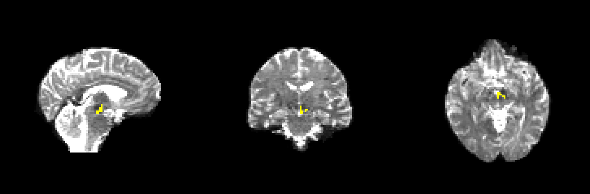
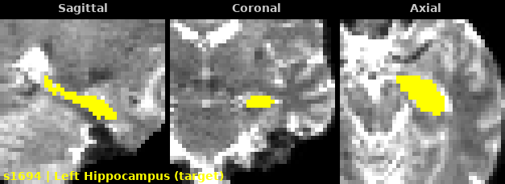
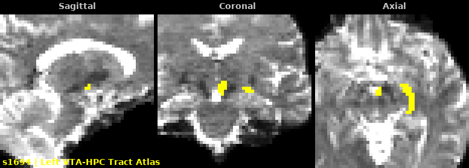
#!/bin/bash # ============================================================ # Step 22: Build Atlas-Based Exclusion Masks # ============================================================ # Uses Ranesh's GroupMean_thr50 tract atlas to create a single # exclusion mask per hemisphere, replacing 13 individual exclusion ROIs. # # Logic (per Ranesh): # 1. Dilate tract atlas by 2 voxels (fslmaths -dilM -dilM) # 2. Add VTA seed + HPC target to dilated atlas # 3. Binarize = inclusion zone (where streamlines are allowed) # 4. Invert = exclusion mask (everything outside is excluded) # # Input: CSD/<subj>/rois/ (atlas, VTA, HPC in diffusion space) # Output: CSD/<subj>/rois/ (exclusion_mask_l/r.nii.gz) # ============================================================ export FSLDIR=/usr/local/fsl export PATH=$FSLDIR/bin:$PATH source $FSLDIR/etc/fslconf/fsl.sh csd_base="/data/projects/STUDIES/IMPACT/DTI/derivatives/CSD" nifti_base="/data/projects/STUDIES/IMPACT/DTI/NIFTI" log_file="/data/projects/STUDIES/IMPACT/DTI/scripts/step22.log" echo "=== Step 22: Building exclusion masks ===" > "$log_file" echo "Started: $(date)" >> "$log_file" process_subj() { subj=$1 d="$csd_base/$subj/rois" # Check inputs exist missing=0 for f in left_tract_atlas_diff.nii.gz right_tract_atlas_diff.nii.gz \ left_VTA_diff.nii.gz right_VTA_diff.nii.gz \ left_HPC_diff.nii.gz right_HPC_diff.nii.gz; do if [ ! -f "$d/$f" ]; then echo "!!! [$subj] Missing $f — SKIPPING" | tee -a "$log_file" missing=1 fi done if [ "$missing" -eq 1 ]; then return 1; fi echo ">>> [$subj] Building exclusion masks" | tee -a "$log_file" # === LEFT HEMISPHERE === # 1. Dilate tract atlas by 2 voxels fslmaths "$d/left_tract_atlas_diff.nii.gz" -dilM -dilM "$d/l_atlas_dilated.nii.gz" # 2. Add VTA + HPC to dilated atlas, binarize = inclusion zone fslmaths "$d/l_atlas_dilated.nii.gz" \ -add "$d/left_VTA_diff.nii.gz" \ -add "$d/left_HPC_diff.nii.gz" \ -bin "$d/l_inclusion_zone.nii.gz" # 3. Invert = exclusion mask fslmaths "$d/l_inclusion_zone.nii.gz" -binv "$d/exclusion_mask_l.nii.gz" # === RIGHT HEMISPHERE === fslmaths "$d/right_tract_atlas_diff.nii.gz" -dilM -dilM "$d/r_atlas_dilated.nii.gz" fslmaths "$d/r_atlas_dilated.nii.gz" \ -add "$d/right_VTA_diff.nii.gz" \ -add "$d/right_HPC_diff.nii.gz" \ -bin "$d/r_inclusion_zone.nii.gz" fslmaths "$d/r_inclusion_zone.nii.gz" -binv "$d/exclusion_mask_r.nii.gz" echo ">>> [$subj] Done" | tee -a "$log_file" } export -f process_subj export csd_base log_file FSLDIR PATH # Run all subjects in parallel (lightweight fslmaths — 30 jobs fine) for subj in $(ls -1 "$nifti_base"); do process_subj "$subj" & while [ "$(jobs -r | wc -l)" -ge 30 ]; do sleep 0.5; done done wait echo "=== Step 22 Complete: $(date) ===" | tee -a "$log_file"
Ranesh's original pipeline used 13 separate anatomical exclusion ROIs. His approved shortcut: take his group tract atlas, dilate it 2 voxels into a corridor, add the VTA and hippocampus, then invert, so allowed = the corridor and excluded = everything else. One mask instead of thirteen. This is also what lets us drop the FOD cutoff so low in the next step.
57/57 pass all 7 audit checks. Inclusion corridor 1,526 to 1,934 voxels (mean ~1,720), consistent across subjects. VTA and HPC fully contained.
#!/bin/bash # ============================================================ # Step 23: Test Tractography on 5 Subjects (Parameter Tuning) # ============================================================ # Tests tckgen with 3 FOD cutoff values (0.1, 0.08, 0.06) on # 5 subjects to find optimal parameters for 3T IMPACT data. # Ranesh used cutoff=0.06 at 7T; predicted 0.08 for 3T. # # Input: CSD/<subj>/wm_fod_norm.mif (normalized WM FODs) # CSD/<subj>/rois/left_VTA_diff.nii.gz (seed) # CSD/<subj>/rois/left_HPC_diff.nii.gz (target/include) # CSD/<subj>/rois/exclusion_mask_l.nii.gz (exclusion) # (same for right hemisphere) # # Output: CSD/<subj>/tckgen/l_vta_l_hipp/l_vta_l_hipp_<cutoff>.tck # CSD/<subj>/tckgen/r_vta_r_hipp/r_vta_r_hipp_<cutoff>.tck # # Parameters matching Ranesh's pipeline (adjusted for 3T): # -seed_unidirectional (same as Ranesh) # -select 1000 (Ranesh: 2500, reduced for test) # -seeds 5000000 (Ranesh: 25M, reduced for test) # -minlength 35 (Ranesh: 35mm at 7T) # -maxlength 65 (Ranesh: 65mm at 7T) # -stop (same as Ranesh) # -cutoff varies: 0.1, 0.08, 0.06 (Ranesh: fixed 0.06 at 7T) # -nthreads 8 (Ranesh: 24, reduced for shared cluster) # # NOT using -fslgrad (gradients already embedded in dwi.mif from Step 15) # NOT using ACT, backtrack, angle, step_size (Ranesh didn't use these) # ============================================================ export PATH=/data/tools/mrtrix3/bin:$PATH csd_base="/data/projects/STUDIES/IMPACT/DTI/derivatives/CSD" log_file="/data/projects/STUDIES/IMPACT/DTI/scripts/step23_test.log" # 5 test subjects (from Ranesh's suggestion) test_subjects="s169 s4222 s4418 s606 s1000" echo "=== Step 23: Test Tractography ===" > "$log_file" echo "Started: $(date)" >> "$log_file" echo "Test subjects: $test_subjects" >> "$log_file" echo "Cutoffs: 0.1, 0.08, 0.06" >> "$log_file" echo "Parameters: -select 1000 -seeds 5000000 -minlength 35 -maxlength 65" >> "$log_file" echo "" >> "$log_file" for subj in $test_subjects; do echo "========================================" | tee -a "$log_file" echo ">>> [$subj] Starting test tractography" | tee -a "$log_file" echo "========================================" | tee -a "$log_file" # Verify inputs exist if [[ ! -f "$csd_base/$subj/wm_fod_norm.mif" ]]; then echo "!!! [$subj] MISSING wm_fod_norm.mif — skipping" | tee -a "$log_file" continue fi if [[ ! -f "$csd_base/$subj/rois/exclusion_mask_l.nii.gz" ]]; then echo "!!! [$subj] MISSING exclusion_mask_l.nii.gz — skipping" | tee -a "$log_file" continue fi for cutoff in 0.1 0.08 0.06; do # === LEFT HEMISPHERE === echo ">>> [$subj] LEFT VTA→HPC at cutoff $cutoff — $(date)" | tee -a "$log_file" mkdir -p "$csd_base/$subj/tckgen/l_vta_l_hipp" tckgen "$csd_base/$subj/wm_fod_norm.mif" \ "$csd_base/$subj/tckgen/l_vta_l_hipp/l_vta_l_hipp_${cutoff}.tck" \ -seed_image "$csd_base/$subj/rois/left_VTA_diff.nii.gz" \ -seed_unidirectional \ -include "$csd_base/$subj/rois/left_HPC_diff.nii.gz" \ -exclude "$csd_base/$subj/rois/exclusion_mask_l.nii.gz" \ -select 1000 \ -seeds 5000000 \ -cutoff $cutoff \ -minlength 35 \ -maxlength 65 \ -stop \ -nthreads 8 \ -force 2>&1 | tee -a "$log_file" # Log streamline count if [[ -f "$csd_base/$subj/tckgen/l_vta_l_hipp/l_vta_l_hipp_${cutoff}.tck" ]]; then count=$(tckinfo "$csd_base/$subj/tckgen/l_vta_l_hipp/l_vta_l_hipp_${cutoff}.tck" 2>/dev/null | grep "actual count" | awk '{print $NF}') echo " → Left streamlines at cutoff $cutoff: $count" | tee -a "$log_file" else echo " → Left tck file NOT created at cutoff $cutoff" | tee -a "$log_file" fi # === RIGHT HEMISPHERE === echo ">>> [$subj] RIGHT VTA→HPC at cutoff $cutoff — $(date)" | tee -a "$log_file" mkdir -p "$csd_base/$subj/tckgen/r_vta_r_hipp" tckgen "$csd_base/$subj/wm_fod_norm.mif" \ "$csd_base/$subj/tckgen/r_vta_r_hipp/r_vta_r_hipp_${cutoff}.tck" \ -seed_image "$csd_base/$subj/rois/right_VTA_diff.nii.gz" \ -seed_unidirectional \ -include "$csd_base/$subj/rois/right_HPC_diff.nii.gz" \ -exclude "$csd_base/$subj/rois/exclusion_mask_r.nii.gz" \ -select 1000 \ -seeds 5000000 \ -cutoff $cutoff \ -minlength 35 \ -maxlength 65 \ -stop \ -nthreads 8 \ -force 2>&1 | tee -a "$log_file" # Log streamline count if [[ -f "$csd_base/$subj/tckgen/r_vta_r_hipp/r_vta_r_hipp_${cutoff}.tck" ]]; then count=$(tckinfo "$csd_base/$subj/tckgen/r_vta_r_hipp/r_vta_r_hipp_${cutoff}.tck" 2>/dev/null | grep "actual count" | awk '{print $NF}') echo " → Right streamlines at cutoff $cutoff: $count" | tee -a "$log_file" else echo " → Right tck file NOT created at cutoff $cutoff" | tee -a "$log_file" fi done echo ">>> [$subj] All cutoffs complete — $(date)" | tee -a "$log_file" echo "" | tee -a "$log_file" done echo "========================================" | tee -a "$log_file" echo "=== Step 23 Test Tractography Complete ===" | tee -a "$log_file" echo "Finished: $(date)" | tee -a "$log_file" # === SUMMARY TABLE === echo "" | tee -a "$log_file" echo "=== SUMMARY TABLE ===" | tee -a "$log_file" printf "%-8s %-15s %-8s %-12s\n" "Subject" "Hemisphere" "Cutoff" "Streamlines" | tee -a "$log_file" printf "%-8s %-15s %-8s %-12s\n" "-------" "---------" "------" "-----------" | tee -a "$log_file" for subj in $test_subjects; do for hemi_dir in l_vta_l_hipp r_vta_r_hipp; do if [[ "$hemi_dir" == "l_vta_l_hipp" ]]; then hemi_label="left" else hemi_label="right" fi for cutoff in 0.1 0.08 0.06; do tck="$csd_base/$subj/tckgen/$hemi_dir/${hemi_dir}_${cutoff}.tck" if [[ -f "$tck" ]]; then count=$(tckinfo "$tck" 2>/dev/null | grep "actual count" | awk '{print $NF}') else count="MISSING" fi printf "%-8s %-15s %-8s %-12s\n" "$subj" "$hemi_label" "$cutoff" "$count" | tee -a "$log_file" done done done echo "" | tee -a "$log_file" echo "=== LENGTH STATISTICS ===" | tee -a "$log_file" printf "%-8s %-15s %-8s %-12s %-12s %-12s\n" "Subject" "Hemisphere" "Cutoff" "Mean(mm)" "Median(mm)" "Std(mm)" | tee -a "$log_file" for subj in $test_subjects; do for hemi_dir in l_vta_l_hipp r_vta_r_hipp; do if [[ "$hemi_dir" == "l_vta_l_hipp" ]]; then hemi_label="left" else hemi_label="right" fi for cutoff in 0.1 0.08 0.06; do tck="$csd_base/$subj/tckgen/$hemi_dir/${hemi_dir}_${cutoff}.tck" if [[ -f "$tck" ]]; then stats=$(tckstats "$tck" 2>/dev/null) mean_len=$(echo "$stats" | grep -i mean | head -1 | awk '{print $2}') median_len=$(echo "$stats" | grep -i median | head -1 | awk '{print $2}') std_len=$(echo "$stats" | grep -i std | head -1 | awk '{print $2}') printf "%-8s %-15s %-8s %-12s %-12s %-12s\n" "$subj" "$hemi_label" "$cutoff" "$mean_len" "$median_len" "$std_len" | tee -a "$log_file" fi done done done
The one tuned parameter: the FOD amplitude cutoff (when tracking stops). Ranesh used 0.06 at 7T; 3T is noisier, so we tested 0.1 / 0.08 / 0.06 / 0.01 on 5 pilot subjects, both hemispheres. Because the exclusion corridor already constrains tracking, the usual downside of a low cutoff (spurious fibers) doesn't apply, so we could go lower than expected.
Runs hitting the 1000 target: 0.1 2/10 (too strict for 3T); 0.08 ~5/10 (inconsistent, s606 L = 309); 0.06 10/10; 0.01 10/10 and about 5x more seed-efficient. Paths were virtually identical to 0.06 (same arc, length ~44 vs ~47 mm). The 0.01 TDI is slightly thicker, which the cleaning step then tightens below the 0.06 bundle anyway.
Cutoff 0.01 chosen for the full run. Ranesh confirmed it is robust with the atlas-based exclusion mask.
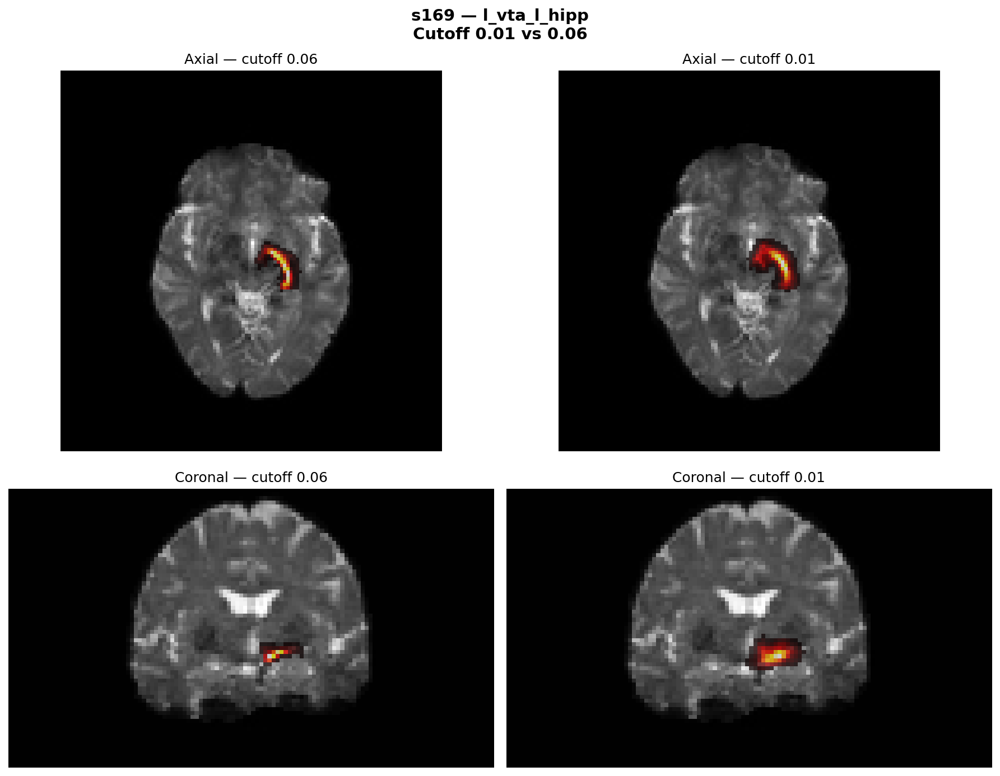
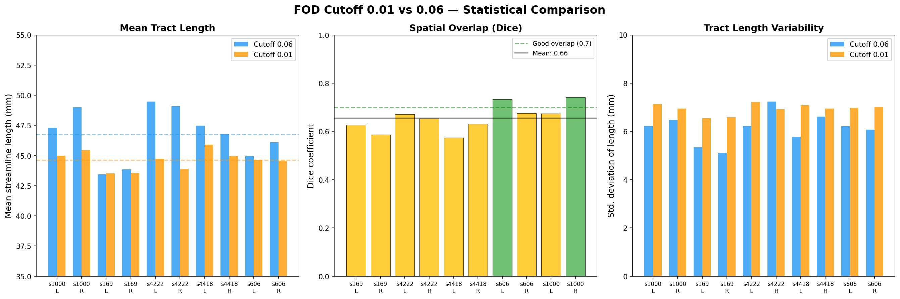
#!/bin/bash # ============================================================ # Step 24: Full Tractography — All 57 Subjects (cutoff 0.01) # ============================================================ # Runs tckgen on all subjects with parameters determined in Step 23: # - cutoff 0.01 (confirmed by Ranesh + pilot testing) # - select 2500 streamlines (Ranesh's target) # - seeds 25,000,000 (Ranesh's seed limit) # - minlength 35mm, maxlength 65mm (Ranesh's values) # - Atlas-based exclusion masks from Step 22 # # Input: CSD/<subj>/wm_fod_norm.mif # CSD/<subj>/rois/{left,right}_{VTA,HPC}_diff.nii.gz # CSD/<subj>/rois/exclusion_mask_{l,r}.nii.gz # # Output: CSD/<subj>/tckgen/{l,r}_vta_{l,r}_hipp/{l,r}_vta_{l,r}_hipp_0.01.tck # ============================================================ export PATH=/data/tools/mrtrix3/bin:$PATH csd_base="/data/projects/STUDIES/IMPACT/DTI/derivatives/CSD" nifti_base="/data/projects/STUDIES/IMPACT/DTI/NIFTI" log_file="/data/projects/STUDIES/IMPACT/DTI/scripts/step24_full.log" echo "=== Step 24: Full Tractography ===" > "$log_file" echo "Started: $(date)" >> "$log_file" echo "Parameters: cutoff=0.01, select=2500, seeds=25000000, minlength=35, maxlength=65" >> "$log_file" echo "" >> "$log_file" subjects=$(ls -1 "$nifti_base") total=$(echo "$subjects" | wc -w) count=0 for subj in $subjects; do count=$((count + 1)) echo "========================================" | tee -a "$log_file" echo ">>> [$count/$total] $subj — $(date)" | tee -a "$log_file" echo "========================================" | tee -a "$log_file" # Verify inputs if [[ ! -f "$csd_base/$subj/wm_fod_norm.mif" ]]; then echo "!!! [$subj] MISSING wm_fod_norm.mif — skipping" | tee -a "$log_file" continue fi for side in l r; do if [ "$side" = "l" ]; then seed=left_VTA_diff.nii.gz inc=left_HPC_diff.nii.gz exc=exclusion_mask_l.nii.gz dir=l_vta_l_hipp label="LEFT" else seed=right_VTA_diff.nii.gz inc=right_HPC_diff.nii.gz exc=exclusion_mask_r.nii.gz dir=r_vta_r_hipp label="RIGHT" fi echo ">>> [$subj] $label VTA→HPC — $(date)" | tee -a "$log_file" mkdir -p "$csd_base/$subj/tckgen/$dir" tckgen "$csd_base/$subj/wm_fod_norm.mif" \ "$csd_base/$subj/tckgen/$dir/${dir}_0.01.tck" \ -seed_image "$csd_base/$subj/rois/$seed" \ -seed_unidirectional \ -include "$csd_base/$subj/rois/$inc" \ -exclude "$csd_base/$subj/rois/$exc" \ -select 2500 \ -seeds 25000000 \ -cutoff 0.01 \ -minlength 35 \ -maxlength 65 \ -stop \ -nthreads 8 \ -force 2>&1 | tee -a "$log_file" # Log streamline count if [[ -f "$csd_base/$subj/tckgen/$dir/${dir}_0.01.tck" ]]; then count_str=$(tckinfo "$csd_base/$subj/tckgen/$dir/${dir}_0.01.tck" 2>/dev/null | grep "count:" | head -1 | awk '{print $NF}') seeds_used=$(tckinfo "$csd_base/$subj/tckgen/$dir/${dir}_0.01.tck" 2>/dev/null | grep "total_count:" | awk '{print $NF}') echo " → $subj $label: $count_str streamlines from $seeds_used seeds" | tee -a "$log_file" else echo " → $subj $label: tck file NOT created" | tee -a "$log_file" fi done done echo "" | tee -a "$log_file" echo "========================================" | tee -a "$log_file" echo "=== Step 24 Complete ===" | tee -a "$log_file" echo "Finished: $(date)" | tee -a "$log_file" # === SUMMARY === echo "" >> "$log_file" echo "=== SUMMARY ===" >> "$log_file" printf "%-8s %-15s %-12s %-12s\n" "Subject" "Hemisphere" "Streamlines" "Seeds_used" >> "$log_file" for subj in $(ls -1 "$nifti_base"); do for dir in l_vta_l_hipp r_vta_r_hipp; do f="$csd_base/$subj/tckgen/$dir/${dir}_0.01.tck" if [[ -f "$f" ]]; then cnt=$(tckinfo "$f" 2>/dev/null | grep "count:" | head -1 | awk '{print $NF}') seeds=$(tckinfo "$f" 2>/dev/null | grep "total_count:" | awk '{print $NF}') printf "%-8s %-15s %-12s %-12s\n" "$subj" "$dir" "$cnt" "$seeds" >> "$log_file" else printf "%-8s %-15s %-12s %-12s\n" "$subj" "$dir" "MISSING" "N/A" >> "$log_file" fi done done echo "STEP24_ALL_DONE" >> "$log_file"
Same command at production budget: 2,500 streamlines from up to 25M seed attempts, cutoff 0.01. Later repeated with a second (anterior) VTA-HPC atlas Ranesh provided, giving four tracts: posterior L/R and anterior L/R.
114/114 posterior runs hit 2,500 streamlines. Seed usage 511K to 2.03M (avg ~1.1M, about 4.4% of the cap), no subject near the budget. Anterior set: all 114 also hit 2,500.
#!/usr/bin/env python3 # ============================================================ # Step 25: Clean tracts using pyAFQ # ============================================================ # Adapted from Ranesh's cleaning script # (hcp_afq_tract_cleaning_hipp_accumbens.txt) # # Parameters (from Ranesh): # n_points = 100 # clean_rounds = 5 # distance_threshold = 3 (Mahalanobis SD) # length_threshold = 2 (SD from mean length) # stat = 'mean' # return_idx = True # # Input: CSD/<subj>/tckgen/{l,r}_vta_{l,r}_hipp/{l,r}_vta_{l,r}_hipp_0.01.tck # Output: CSD/<subj>/tckgen/{l,r}_vta_{l,r}_hipp/{l,r}_vta_{l,r}_hipp_0.01_cleaned.tck # ============================================================ import os import sys from pathlib import Path from AFQ.recognition.cleaning import clean_bundle from dipy.io.streamline import load_tractogram, save_tractogram # Paths csd_base = Path("/data/projects/STUDIES/IMPACT/DTI/derivatives/CSD") nifti_base = Path("/data/projects/STUDIES/IMPACT/DTI/NIFTI") log_file = Path("/data/projects/STUDIES/IMPACT/DTI/scripts/step25_cleaning.log") # pyAFQ cleaning parameters (from Ranesh) n_points = 100 clean_rounds = 5 distance_threshold = 3 # 3 SD Mahalanobis distance length_threshold = 2 # 2 SD from mean length cutoff = "0.01" # Get subject list subjects = sorted([d.name for d in nifti_base.iterdir() if d.is_dir()]) hemis = ["l_vta_l_hipp", "r_vta_r_hipp"] with open(log_file, 'w') as log: log.write("=== Step 25: pyAFQ Tract Cleaning ===\n") log.write(f"Parameters: n_points={n_points}, clean_rounds={clean_rounds}, " f"distance_threshold={distance_threshold}, length_threshold={length_threshold}\n") log.write(f"Cutoff: {cutoff}\n") log.write(f"Subjects: {len(subjects)}\n\n") total = len(subjects) * len(hemis) count = 0 results = [] for subj in subjects: for hemi in hemis: count += 1 in_tck = csd_base / subj / "tckgen" / hemi / f"{hemi}_{cutoff}.tck" out_tck = csd_base / subj / "tckgen" / hemi / f"{hemi}_{cutoff}_cleaned.tck" # Reference image for tractogram loading ref_img = csd_base / subj / "qc" / "mean_b0.nii.gz" if not ref_img.exists(): ref_img = Path(f"/data/projects/STUDIES/IMPACT/DTI/derivatives/" f"preproc/{subj}/eddy_dwi/data.nii.gz") msg = f"[{count}/{total}] {subj} {hemi}" if not in_tck.exists(): msg += " — SKIP: missing input tck" print(msg) log.write(msg + "\n") results.append((subj, hemi, "MISSING", "N/A", "N/A")) continue if not ref_img.exists(): msg += " — SKIP: missing reference image" print(msg) log.write(msg + "\n") results.append((subj, hemi, "NO_REF", "N/A", "N/A")) continue try: sft = load_tractogram(str(in_tck), str(ref_img), bbox_valid_check=False) n_before = len(sft.streamlines) if n_before == 0: msg += " — SKIP: 0 streamlines" print(msg) log.write(msg + "\n") results.append((subj, hemi, 0, 0, "0%")) continue cleaned_sft, idx = clean_bundle( sft, n_points=n_points, clean_rounds=clean_rounds, distance_threshold=distance_threshold, length_threshold=length_threshold, stat='mean', return_idx=True ) n_after = len(cleaned_sft.streamlines) pct = f"{n_after/n_before*100:.1f}%" msg += f" — {n_before} → {n_after} ({pct} retained)" print(msg) log.write(msg + "\n") results.append((subj, hemi, n_before, n_after, pct)) save_tractogram(cleaned_sft, str(out_tck), bbox_valid_check=False) except Exception as e: msg += f" — ERROR: {str(e)}" print(msg) log.write(msg + "\n") results.append((subj, hemi, "ERROR", str(e), "N/A")) # Summary log.write("\n=== SUMMARY ===\n") log.write(f"{'Subject':<12} {'Hemisphere':<16} {'Before':<10} " f"{'After':<10} {'Retained':<10}\n") log.write("-" * 58 + "\n") for subj, hemi, before, after, pct in results: log.write(f"{subj:<12} {hemi:<16} {str(before):<10} " f"{str(after):<10} {str(pct):<10}\n") log.write("\nSTEP25_ALL_DONE\n") print("\n=== Step 25 Complete ===")
Prune anatomically implausible streamlines by Mahalanobis distance: anything more than 3 SD from the bundle's core shape, or 2 SD off in length, dropped over 5 rounds. Ported from Ranesh's cleaning script.
114/114 cleaned, retention 26.4% to 57.5% (avg ~39%), no bundle emptied. The cleaned 0.01 tract is tighter (length SD ~3.5-4.5 mm) than both the uncleaned 0.01 and the conservative 0.06 (~5-7 mm), which validates the permissive-cutoff plus cleaning approach.
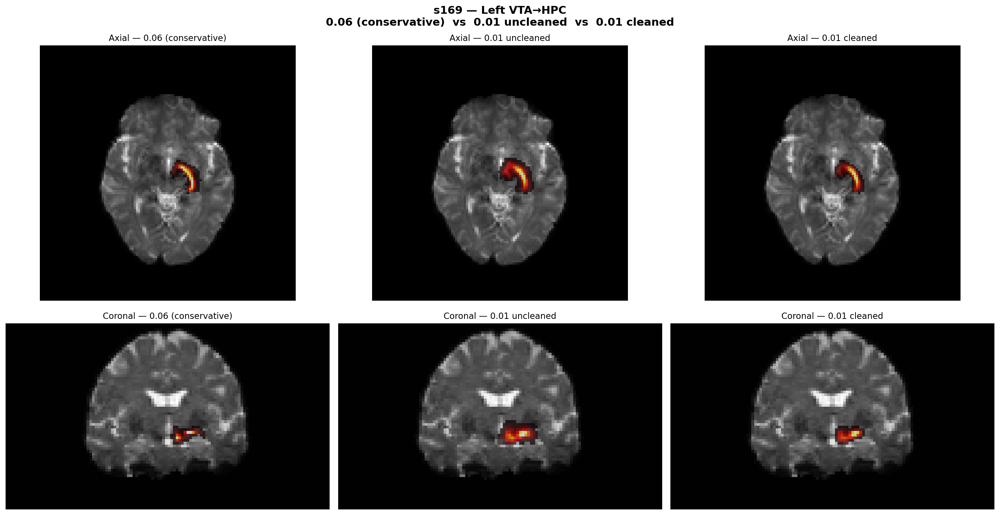
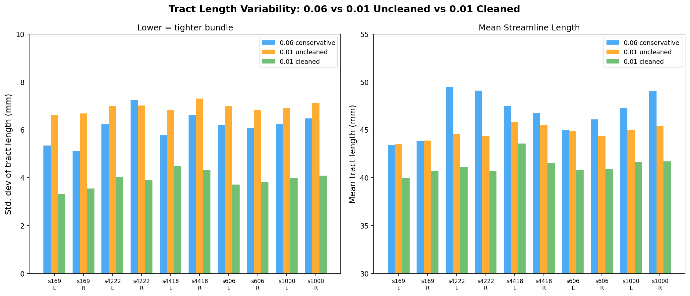
#!/usr/bin/env python3 # ============================================================ # Step 26: Visual QC — Cleaned Tract TDIs for All 57 Subjects # ============================================================ # Generates tract density images (TDIs) for cleaned tracts # and overlays them on mean b0 for visual inspection. # Automated flags: LOW_VOXELS (<50), HIGH_VOXELS (>5000), # LOW_DENSITY (max<5) # ============================================================ import os import nibabel as nib import numpy as np import matplotlib matplotlib.use('Agg') import matplotlib.pyplot as plt from pathlib import Path csd = Path("/data/projects/STUDIES/IMPACT/DTI/derivatives/CSD") nifti = Path("/data/projects/STUDIES/IMPACT/DTI/NIFTI") out = Path("/data/projects/STUDIES/IMPACT/DTI/derivatives/CSD/qc_step26") out.mkdir(exist_ok=True) subjects = sorted([d.name for d in nifti.iterdir() if d.is_dir()]) hemis = [("l_vta_l_hipp", "Left VTA→HPC"), ("r_vta_r_hipp", "Right VTA→HPC")] cutoff = "0.01" os.environ["PATH"] = "/data/tools/mrtrix3/bin:" + os.environ.get("PATH", "") log = open(out / "step26_qc.log", "w") log.write("=== Step 26: Visual QC of Cleaned Tracts ===\n\n") flags = [] total = len(subjects) * len(hemis) count = 0 for subj in subjects: b0_f = csd / subj / "qc" / "mean_b0.nii.gz" if not b0_f.exists(): log.write(f"[{subj}] SKIP: no mean_b0\n") continue bg = nib.load(str(b0_f)).get_fdata() for hemi_dir, hemi_label in hemis: count += 1 cleaned = (csd / subj / "tckgen" / hemi_dir / f"{hemi_dir}_{cutoff}_cleaned.tck") tdi_f = out / f"{subj}_{hemi_dir}_tdi.nii.gz" if not cleaned.exists(): msg = f"[{count}/{total}] {subj} {hemi_dir} — MISSING" print(msg) log.write(msg + "\n") flags.append((subj, hemi_dir, "MISSING")) continue # Generate TDI via tckmap template = csd / subj / "rois" / "left_VTA_diff.nii.gz" os.system(f"tckmap {cleaned} {tdi_f} " f"-template {template} -force 2>/dev/null") if not tdi_f.exists(): msg = f"[{count}/{total}] {subj} {hemi_dir} — tckmap FAILED" print(msg) log.write(msg + "\n") flags.append((subj, hemi_dir, "TCKMAP_FAIL")) continue tdi = nib.load(str(tdi_f)).get_fdata() n_voxels = int(np.sum(tdi > 0)) max_density = float(np.max(tdi)) # Find best slices best_ax = int(np.argmax(tdi.sum(axis=(0, 1)))) best_cor = int(np.argmax(tdi.sum(axis=(0, 2)))) # Automated flag checks flag = None if n_voxels < 50: flag = f"LOW_VOXELS ({n_voxels})" elif n_voxels > 5000: flag = f"HIGH_VOXELS ({n_voxels})" elif max_density < 5: flag = f"LOW_DENSITY (max={max_density:.0f})" if flag: flags.append((subj, hemi_dir, flag)) status = f"FLAG: {flag}" if flag else "OK" msg = (f"[{count}/{total}] {subj} {hemi_dir} — " f"{status} (voxels={n_voxels}, " f"max_density={max_density:.0f})") print(msg) log.write(msg + "\n") # Generate QC image fig, axes = plt.subplots(1, 2, figsize=(10, 5)) fig.suptitle(f'{subj} — {hemi_label} (cleaned)', fontsize=13, fontweight='bold') for j, (sl, title) in enumerate([ (bg[:, :, best_ax], 'Axial'), (bg[:, best_cor, :], 'Coronal') ]): ax = axes[j] ax.imshow(np.rot90(sl), cmap='gray') tdi_sl = (tdi[:, :, best_ax] if j == 0 else tdi[:, best_cor, :]) mask = tdi_sl > 0 overlay = np.ma.masked_where(~mask, tdi_sl) ax.imshow(np.rot90(overlay), cmap='hot', alpha=0.7) ax.set_title(title, fontsize=11) ax.axis('off') if flag: fig.text(0.5, 0.01, f"FLAG: {flag}", ha='center', fontsize=11, color='red', fontweight='bold') plt.tight_layout() plt.savefig(str(out / f"{subj}_{hemi_dir}_qc.png"), dpi=100, bbox_inches='tight') plt.close() os.remove(str(tdi_f)) log.write("\n=== FLAGGED SUBJECTS ===\n") if flags: for subj, hemi, reason in flags: log.write(f" {subj} {hemi}: {reason}\n") else: log.write(" None — all subjects pass\n") log.write(f"\nTotal: {count}/{total}\n") log.write(f"Flagged: {len(flags)}\n") log.write("STEP26_ALL_DONE\n") log.close() print(f"\n=== Step 26 Complete ===") print(f"Flagged: {len(flags)}") print("STEP26_ALL_DONE")
For every cleaned tract, a track-density image overlaid on the mean b0 to eyeball the shape, with auto-flags for anything too sparse (<50 voxels) or too diffuse (>5000).
All 114 (and the anterior set) passed and show the expected VTA to hippocampus arc.
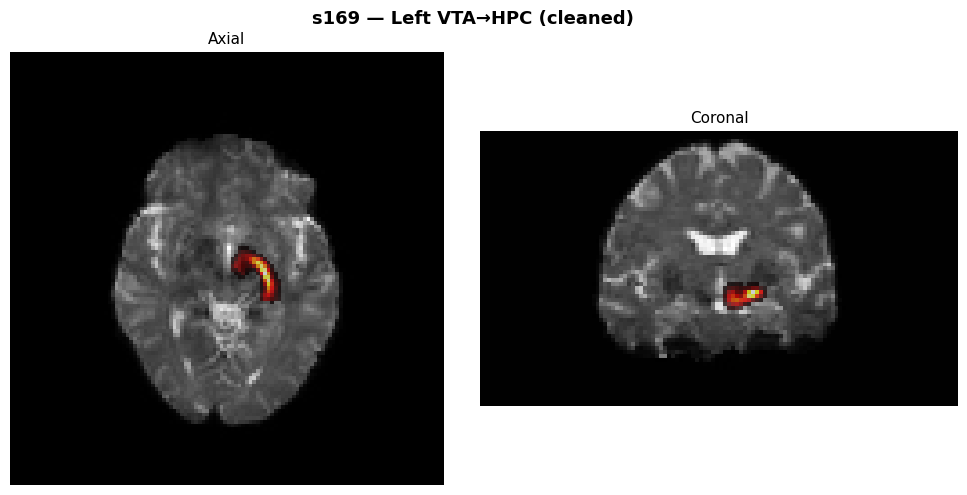
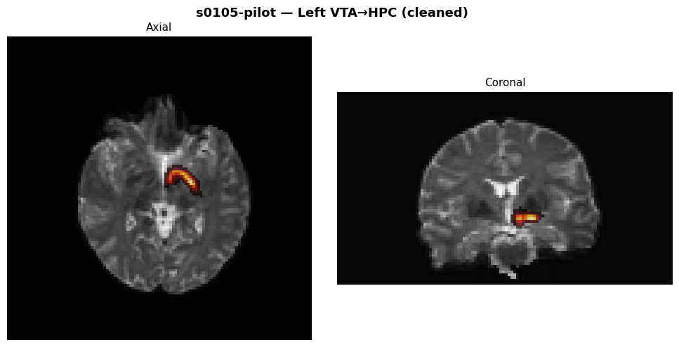
#!/usr/bin/env python3 # ============================================================ # Step 27: Node-wise FA Extraction (AFQ-style tract profiling) # ============================================================ # Adapted from Ranesh's nodewise_noddi.py — exact same profiling # machinery (QuickBundles orientation + AFQ Gaussian-weighted # profile), just applied to FA maps from DTIFIT instead of # NODDI metrics. Processes both posterior and anterior tracts. # ============================================================ from pathlib import Path import csv import numpy as np import matplotlib matplotlib.use('Agg') import matplotlib.pyplot as plt import dipy.stats.analysis as dsa import dipy.tracking.streamline as dts from dipy.io.streamline import load_tractogram from dipy.io.image import load_nifti from dipy.segment.clustering import QuickBundles from dipy.segment.metricspeed import AveragePointwiseEuclideanMetric from dipy.segment.featurespeed import ResampleFeature # Tracts: both posterior and anterior VTA-HPC (both hemispheres) tracts = [ "l_vta_l_hipp", "r_vta_r_hipp", "anterior_l_vta_l_hipp", "anterior_r_vta_r_hipp", ] # Paths csd_root = Path("/data/projects/STUDIES/IMPACT/DTI/derivatives/CSD") dtifit_root = Path("/data/projects/STUDIES/IMPACT/DTI/derivatives/DTIFIT_OUTPUT") nifti_root = Path("/data/projects/STUDIES/IMPACT/DTI/NIFTI") nodewise = Path("/data/projects/STUDIES/IMPACT/DTI/derivatives/nodewise_fa") nodewise.mkdir(parents=True, exist_ok=True) csv_dir = nodewise / "csvs" csv_dir.mkdir(parents=True, exist_ok=True) # Profile parameters (match Ranesh's NODDI script) num_nodes = 100 min_streamlines = 5 subjects = sorted([d.name for d in nifti_root.iterdir() if d.is_dir()]) # ========================= # HELPERS (verbatim from Ranesh) # ========================= def orient_to_centroid(streamlines, nb_points=num_nodes): """Orient all streamlines to match the bundle centroid direction.""" feat = ResampleFeature(nb_points=nb_points) metric = AveragePointwiseEuclideanMetric(feat) qb = QuickBundles(threshold=np.inf, metric=metric) centroid = qb.cluster(streamlines).centroids[0] oriented = dts.orient_by_streamline(streamlines, centroid) return dts.Streamlines(oriented) def profile_metric(img_path, streamlines, nb_points=num_nodes): """AFQ-style Gaussian-weighted profile at nb_points nodes.""" data, aff = load_nifti(str(img_path)) weights = dsa.gaussian_weights(streamlines) prof = dsa.afq_profile(data, streamlines, aff, nb_points=nb_points, weights=weights) return np.asarray(prof, dtype=float) # ========================= # MAIN # ========================= print(f"=== Step 27: Node-wise FA Extraction ===") print(f"Subjects: {len(subjects)}") print(f"Tracts: {len(tracts)}") for tract in tracts: print(f"\n{'='*80}\nProcessing tract: {tract}\n{'='*80}") csv_path = csv_dir / f"{tract}_fa_nodewise_all_subjects.csv" with open(csv_path, "w", newline="") as fcsv: w = csv.writer(fcsv) w.writerow(["Subject", "Tract", "Node", "FA"]) for s in subjects: try: in_tck = csd_root / s / "tckgen" / tract / f"{tract}_0.01_cleaned.tck" f_fa = dtifit_root / s / "DTI_FA.nii.gz" if not in_tck.exists(): print(f"[{s}] [{tract}] SKIP: missing cleaned tract") continue if not f_fa.exists(): print(f"[{s}] [{tract}] SKIP: missing FA map") continue out_png_dir = nodewise / s / tract out_png_dir.mkdir(parents=True, exist_ok=True) tg = load_tractogram(str(in_tck), str(f_fa), bbox_valid_check=False) sl = tg.streamlines if len(sl) < min_streamlines: print(f"[{s}] [{tract}] SKIP: only {len(sl)} streamlines") continue sl_oriented = orient_to_centroid(sl, nb_points=num_nodes) fa = profile_metric(f_fa, sl_oriented, nb_points=num_nodes) for node in range(num_nodes): w.writerow([s, tract, node, float(fa[node])]) plt.figure() plt.plot(fa) plt.ylabel("FA") plt.xlabel(f"Node along {tract}") plt.title(f"{s} • {tract} • FA") plt.tight_layout() plt.savefig(out_png_dir / f"{tract}_FA_profile.png", dpi=150) plt.close() print(f"[{s}] [{tract}] wrote 100 rows to CSV and PNG") except Exception as e: print(f"[{s}] [{tract}] SKIP due to error: {e}") print(f"\nALL DONE.\nCSV directory: {csv_dir}") print("STEP27_ALL_DONE")
Sample FA at 100 nodes evenly spaced along the tract. Every streamline is oriented the same way (via a QuickBundles centroid, so node 1 is always the same end), resampled to 100 points, and Gaussian-weighted (core streamlines count more). Analyses use the middle nodes (~25-75); the ends are dropped for partial-volume contamination. Ported from Ranesh's nodewise_noddi.py.
228 FA profiles (4 tracts x 57 subjects), zero skips. Each tract CSV is 5,701 rows (57 x 100 + header).
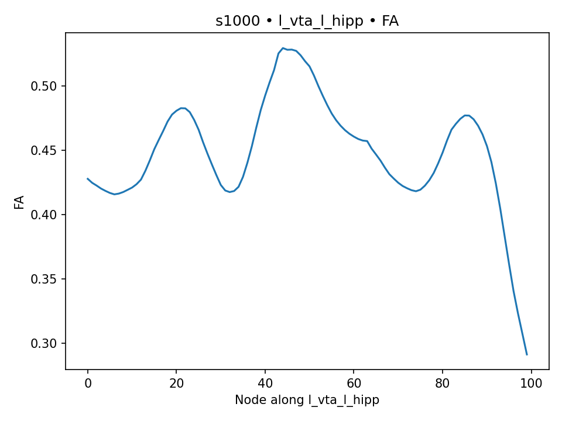
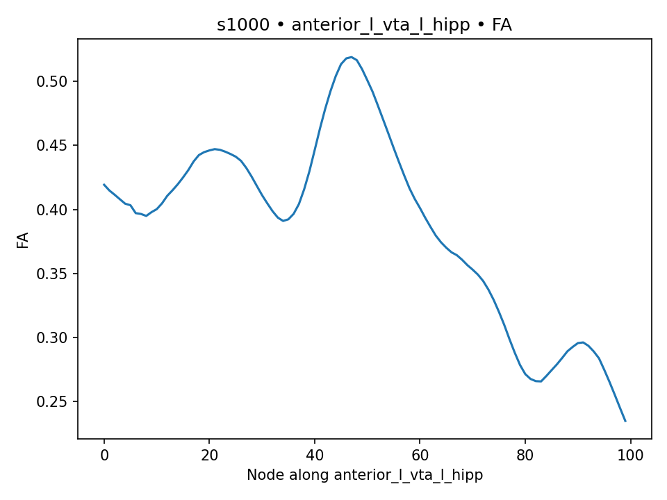
amico.util.fsl2scheme(bvals, bvecs, bStep=200) # round b to nearest 200
ae = amico.Evaluation(study_dir, subject)
ae.set_model('NODDI')
ae.load_data(dwi, scheme, mask, b0_thr=100)
ae.generate_kernels(regenerate=True)
ae.fit()
ae.save_results() # -> fit_NDI_modulated, fit_ODI_modulated, fit_FWF, fit_RMSEFit NODDI on all shells with AMICO, giving three interpretable maps per voxel: NDI (neurite density), ODI (orientation dispersion), FWF (free-water fraction). We saved the modulated NDI/ODI (tissue-weighted partial-volume correction, per Parker et al. 2021), the version Ranesh used. FWF has no modulated version; the tissue-weighting is itself the correction. Config: bStep=200, b0_thr=100, doSaveModulatedMaps=True, doComputeRMSE=True.
57/57 pass, full set of NODDI outputs. 3 subjects hit a kernel-directory race on the parallel pass and were re-run serially.
# identical machinery to the FA step; only the sampled map changes:
NDI = profile_metric('fit_NDI_modulated.nii.gz', sl_oriented)
ODI = profile_metric('fit_ODI_modulated.nii.gz', sl_oriented)
FWF = profile_metric('fit_FWF.nii.gz', sl_oriented)The FA-profiling step again (identical orient plus Gaussian-weighted profiling, same helpers), applied to the three NODDI maps. This produces the main microstructure measurements the statistics use.
684 profiles (4 tracts x 57 subjects x 3 metrics), zero skips.
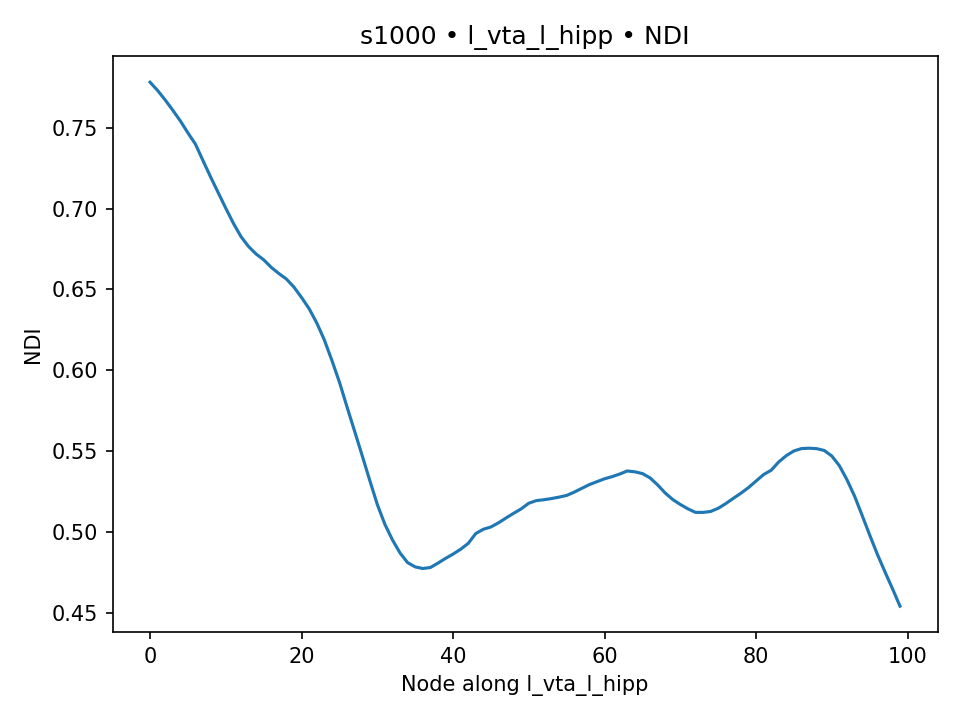
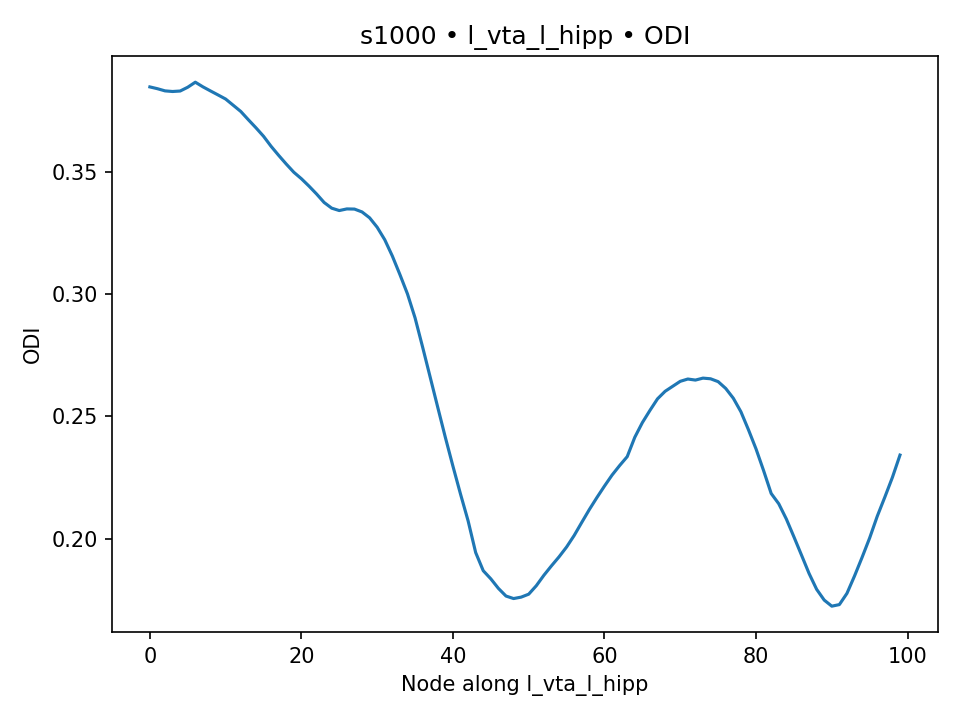
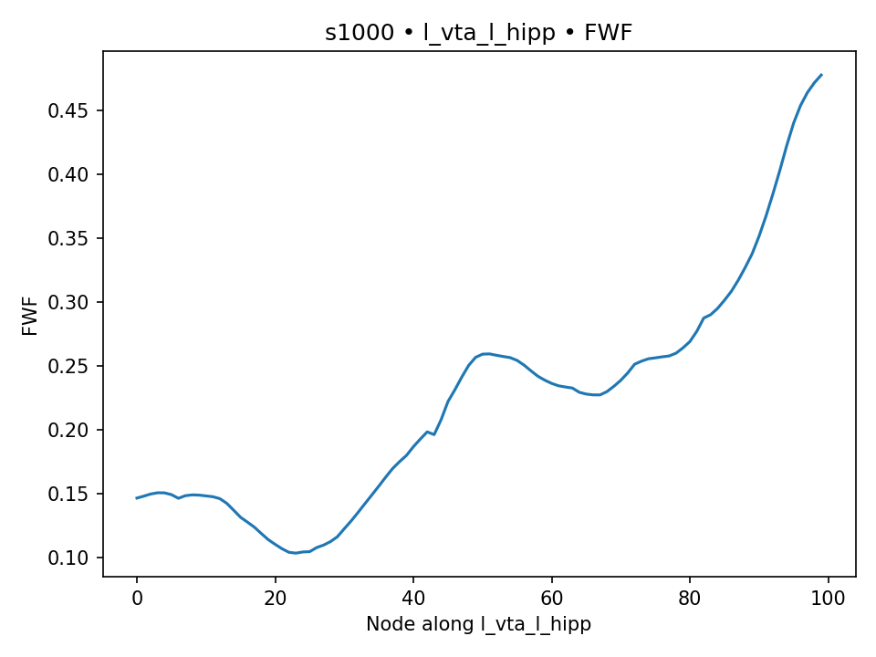
fslstats fit_NDI_modulated.nii.gz -k left_HPC_diff.nii.gz -M # mean NDI, left HPC
# repeated for ODI, FWF and the right hemisphereOne extra measurement for a control analysis: the mean NODDI value inside the hippocampus ROI itself (the region, not the pathway). Same Harvard-Oxford hippocampus warped to diffusion space. Lets us ask whether memory tracks the tract specifically or just hippocampal tissue in general.
Next: how memory is scored, and how it's tested against the tract →